options(repos = c(CRAN = "https://cloud.r-project.org"))Analysis Report
Table of Contents
[1 Introduction]
[2 Data Loading]
2.3 Categorizing the Dataset’s Attributes
[3 Data Cleaning]
[4 Data Analysis]
[5 Models]
5.1 Multiple Regression of Life Expectancy
5.1.1 Splitting the Data
5.1.2 Making the First Model
5.1.3 Pruning the Model
5.2 Neural Network of Life Expectancy
5.3 SVR Model for Life Expectancy
- 5.3.1 Conclusion of SVR Model
5.4 Random Forest
5.5 Which Variables Most Influence Life Expectancy
5.6 Comparing the Models
5.7 Predict Countries Economic Status from Life Expectancy
5.7.1 Logistic Regression Model
5.7.2 XG Boost Model
5.7.3 Decision Tree
5.7.4 Comparing the Models
5.8 Deep Analysis
- 5.8.1 Deep Analysis Conclusion
1 Introduction
This dataset includes comprehensive information on 179 countries spanning from 2000 to 2015, covering aspects like life expectancy, health indicators, immunization rates, and economic and demographic data. Originally sourced from Kaggle, it underwent updates to rectify inaccuracies and missing values. Population, GDP, and life expectancy figures were updated from World Bank data, while data on vaccinations, alcohol consumption, BMI, HIV rates, mortality, and other health metrics were sourced from the World Health Organization. Additional information on schooling was gathered from the University of Oxford’s Our World in Data project. Missing values were addressed using strategies such as filling with the closest three-year average or the regional average. Countries with significant missing data were excluded, and the remaining countries were categorized based on their Gross National Income per capita into developed vs developing economies, following guidelines from organizations like the World Trade Organization and the UN.
1.1 Data Understanding
Columns in the dataset:
Country: List of the 179 countries
Region: 179 countries are distributed in 9 regions. E.g. Africa, Asia, Oceania, European Union, Rest of Europe and etc.
Year: Years observed from 2000 to 2015
Infant_deaths: Represents infant deaths per 1000 population
Under_five_deaths: Represents deaths of children under five years old per 1000 population
Adult_mortality: Represents deaths of adults per 1000 population
Alcohol_consumption: Represents alcohol consumption that is recorded in liters of pure alcohol per capita with 15+ years old
Hepatitis_B: Represents % of coverage of Hepatitis B (HepB3) immunization among 1-year-olds
Measles: Represents % of coverage of Measles containing vaccine first dose (MCV1) immunization among 1-year-olds
BMI: BMI is a measure of nutritional status in adults. It is defined as a person’s weight in kilograms divided by the square of that person’s height in meters (kg/m2)
Polio: Represents % of coverage of Polio (Pol3) immunization among 1-year-olds
Diphtheria: Represents % of coverage of Diphtheria tetanus toxoid and pertussis (DTP3) immunization among 1-year-olds
Incidents_HIV: Incidents of HIV per 1000 population aged 15-49
GDP_per_capita: GDP per capita in current USD
Population_mln: Total population in millions
Thinness_ten_nineteen_years: Prevalence of thinness among adolescents aged 10-19 years. BMI < -2 standard deviations below the median
Thinness_five_nine_years: Prevalence of thinness among children aged 5-9 years. BMI < -2 standard deviations below the median
Schooling: Average years that people aged 25+ spent in formal education
Economy_status_Developed: Developed country
Economy_status_Developing: Developing county
Life_expectancy: Average life expectancy of both genders in different years from 2010 to 2015
1.2 Data Source
Original dataset can be found here: https://www.kaggle.com/datasets/lashagoch/life-expectancy-who-updated
For ease of use we have re-uploaded the dataset to this Github repository created for this group project:
1.3 Initial Questions
What are the predicting variables affecting life expectancy?
How does infant and adult mortality rates affect life expectancy?
Does life expectancy have a positive or negative correlation with
BMI
Diseases
Alcohol Consumption
Immunizations
What is the impact of schooling on the lifespan of humans?
- Can we predict lifespan based off of schooling?
Do densely populated countries tend to have lower life expectancy?
What is the impact of imunization coverage on life expectancy?
Will there be an increase in life expectancy in the next 10 years?
Will the rate of infant deaths go down over the next 5 years?
Is there a correlation between economic status and life expectancy?
- Can we predict countries economic status based off life expectancy?
Do certain regions have higher vaccination rates?
2 Data Loading
2.1 Importing Libraries
Install these packages if not already installed on your machine:
install.packages("tidyverse")Installing package into '/opt/homebrew/lib/R/4.4/site-library'
(as 'lib' is unspecified)install.packages("car")Installing package into '/opt/homebrew/lib/R/4.4/site-library'
(as 'lib' is unspecified)install.packages("caret")Installing package into '/opt/homebrew/lib/R/4.4/site-library'
(as 'lib' is unspecified)install.packages("neuralnet")Installing package into '/opt/homebrew/lib/R/4.4/site-library'
(as 'lib' is unspecified)install.packages("e1071")Installing package into '/opt/homebrew/lib/R/4.4/site-library'
(as 'lib' is unspecified)install.packages("randomForest")Installing package into '/opt/homebrew/lib/R/4.4/site-library'
(as 'lib' is unspecified)install.packages("caTools")Installing package into '/opt/homebrew/lib/R/4.4/site-library'
(as 'lib' is unspecified)install.packages("clusterGeneration")Installing package into '/opt/homebrew/lib/R/4.4/site-library'
(as 'lib' is unspecified)install.packages("pROC")Installing package into '/opt/homebrew/lib/R/4.4/site-library'
(as 'lib' is unspecified)install.packages("xgboost")Installing package into '/opt/homebrew/lib/R/4.4/site-library'
(as 'lib' is unspecified)Import the libraries:
library(tidyverse)── Attaching core tidyverse packages ──────────────────────── tidyverse 2.0.0 ──
✔ dplyr 1.1.4 ✔ readr 2.1.5
✔ forcats 1.0.0 ✔ stringr 1.5.1
✔ ggplot2 3.5.1 ✔ tibble 3.2.1
✔ lubridate 1.9.3 ✔ tidyr 1.3.1
✔ purrr 1.0.2
── Conflicts ────────────────────────────────────────── tidyverse_conflicts() ──
✖ dplyr::filter() masks stats::filter()
✖ dplyr::lag() masks stats::lag()
ℹ Use the conflicted package (<http://conflicted.r-lib.org/>) to force all conflicts to become errorslibrary(caret)Loading required package: lattice
Attaching package: 'caret'
The following object is masked from 'package:purrr':
liftlibrary(car)Loading required package: carData
Attaching package: 'car'
The following object is masked from 'package:dplyr':
recode
The following object is masked from 'package:purrr':
somelibrary(neuralnet)
Attaching package: 'neuralnet'
The following object is masked from 'package:dplyr':
computelibrary(e1071)
library(randomForest)randomForest 4.7-1.1
Type rfNews() to see new features/changes/bug fixes.
Attaching package: 'randomForest'
The following object is masked from 'package:dplyr':
combine
The following object is masked from 'package:ggplot2':
marginlibrary(caTools)
library(parallel)
library(doParallel)Loading required package: foreach
Attaching package: 'foreach'
The following objects are masked from 'package:purrr':
accumulate, when
Loading required package: iteratorslibrary(pROC)Type 'citation("pROC")' for a citation.
Attaching package: 'pROC'
The following objects are masked from 'package:stats':
cov, smooth, varlibrary(rpart)
library(rpart.plot)
library(xgboost)
Attaching package: 'xgboost'
The following object is masked from 'package:dplyr':
slice2.2 Loading and Understanding the Data
Load the dataset from the GitHub repository:
df <- read_csv("https://raw.githubusercontent.com/hmunye/life-expectancy-analysis/main/data/Life-Expectancy-Data-Updated.csv", show_col_types = FALSE)Display the first 5 rows of the dataset:
head(df, 5)# A tibble: 5 × 21
Country Region Year Infant_deaths Under_five_deaths Adult_mortality
<chr> <chr> <dbl> <dbl> <dbl> <dbl>
1 Turkiye Middle East 2015 11.1 13 106.
2 Spain European Union 2015 2.7 3.3 57.9
3 India Asia 2007 51.5 67.9 201.
4 Guyana South America 2006 32.8 40.5 222.
5 Israel Middle East 2012 3.4 4.3 58.0
# ℹ 15 more variables: Alcohol_consumption <dbl>, Hepatitis_B <dbl>,
# Measles <dbl>, BMI <dbl>, Polio <dbl>, Diphtheria <dbl>,
# Incidents_HIV <dbl>, GDP_per_capita <dbl>, Population_mln <dbl>,
# Thinness_ten_nineteen_years <dbl>, Thinness_five_nine_years <dbl>,
# Schooling <dbl>, Economy_status_Developed <dbl>,
# Economy_status_Developing <dbl>, Life_expectancy <dbl>Shape of the data frame
# Get the number of rows
num_rows <- nrow(df)
# Get the number of columns
num_cols <- ncol(df)
# Print the results
cat("Number of rows:", num_rows, "\n")Number of rows: 2864 cat("Number of columns:", num_cols, "\n")Number of columns: 21 Summary of the Data Frame:
summary(df) Country Region Year Infant_deaths
Length:2864 Length:2864 Min. :2000 Min. : 1.80
Class :character Class :character 1st Qu.:2004 1st Qu.: 8.10
Mode :character Mode :character Median :2008 Median : 19.60
Mean :2008 Mean : 30.36
3rd Qu.:2011 3rd Qu.: 47.35
Max. :2015 Max. :138.10
Under_five_deaths Adult_mortality Alcohol_consumption Hepatitis_B
Min. : 2.300 Min. : 49.38 Min. : 0.000 Min. :12.00
1st Qu.: 9.675 1st Qu.:106.91 1st Qu.: 1.200 1st Qu.:78.00
Median : 23.100 Median :163.84 Median : 4.020 Median :89.00
Mean : 42.938 Mean :192.25 Mean : 4.821 Mean :84.29
3rd Qu.: 66.000 3rd Qu.:246.79 3rd Qu.: 7.777 3rd Qu.:96.00
Max. :224.900 Max. :719.36 Max. :17.870 Max. :99.00
Measles BMI Polio Diphtheria
Min. :10.00 Min. :19.80 Min. : 8.0 Min. :16.00
1st Qu.:64.00 1st Qu.:23.20 1st Qu.:81.0 1st Qu.:81.00
Median :83.00 Median :25.50 Median :93.0 Median :93.00
Mean :77.34 Mean :25.03 Mean :86.5 Mean :86.27
3rd Qu.:93.00 3rd Qu.:26.40 3rd Qu.:97.0 3rd Qu.:97.00
Max. :99.00 Max. :32.10 Max. :99.0 Max. :99.00
Incidents_HIV GDP_per_capita Population_mln
Min. : 0.0100 Min. : 148 Min. : 0.080
1st Qu.: 0.0800 1st Qu.: 1416 1st Qu.: 2.098
Median : 0.1500 Median : 4217 Median : 7.850
Mean : 0.8943 Mean : 11541 Mean : 36.676
3rd Qu.: 0.4600 3rd Qu.: 12557 3rd Qu.: 23.688
Max. :21.6800 Max. :112418 Max. :1379.860
Thinness_ten_nineteen_years Thinness_five_nine_years Schooling
Min. : 0.100 Min. : 0.1 Min. : 1.100
1st Qu.: 1.600 1st Qu.: 1.6 1st Qu.: 5.100
Median : 3.300 Median : 3.4 Median : 7.800
Mean : 4.866 Mean : 4.9 Mean : 7.632
3rd Qu.: 7.200 3rd Qu.: 7.3 3rd Qu.:10.300
Max. :27.700 Max. :28.6 Max. :14.100
Economy_status_Developed Economy_status_Developing Life_expectancy
Min. :0.0000 Min. :0.0000 Min. :39.40
1st Qu.:0.0000 1st Qu.:1.0000 1st Qu.:62.70
Median :0.0000 Median :1.0000 Median :71.40
Mean :0.2067 Mean :0.7933 Mean :68.86
3rd Qu.:0.0000 3rd Qu.:1.0000 3rd Qu.:75.40
Max. :1.0000 Max. :1.0000 Max. :83.80 2.3 Categorizing the Datasets Attributes
Nominal (Factors)
Country
Region
Year
Economy_status_Developed
Economy_status_Developing
Numerical (Nominal):
Infant_deaths
Under_five_deaths
Numerical (Interval)
- BMI
Numerical (Ratio)
- Life_expectancy
- Adult_mortality
- Hepatitis_B
- Measles
- Polio
- Incidents_HIV
- GDP_per_capita
- Population_mln
- Thinness_five_nine_years
- Thinness_ten_nineteen_years
- Schooling
Creating a list of all nominal/factors
Regions
df |>
distinct(Region)# A tibble: 9 × 1
Region
<chr>
1 Middle East
2 European Union
3 Asia
4 South America
5 Central America and Caribbean
6 Rest of Europe
7 Africa
8 Oceania
9 North America Country
df |>
distinct(Country)# A tibble: 179 × 1
Country
<chr>
1 Turkiye
2 Spain
3 India
4 Guyana
5 Israel
6 Costa Rica
7 Russian Federation
8 Hungary
9 Jordan
10 Moldova
# ℹ 169 more rowsYear
df |>
distinct(Year)# A tibble: 16 × 1
Year
<dbl>
1 2015
2 2007
3 2006
4 2012
5 2000
6 2001
7 2008
8 2011
9 2002
10 2013
11 2005
12 2003
13 2004
14 2009
15 2010
16 2014Economic Status:
df |>
distinct(Economy_status_Developed)# A tibble: 2 × 1
Economy_status_Developed
<dbl>
1 0
2 1df |>
distinct(Economy_status_Developing)# A tibble: 2 × 1
Economy_status_Developing
<dbl>
1 1
2 0For the purpose of analysis in R, it is good practice to change categorical variables into factors
df$Country <- factor(df$Country)
df$Region <- factor(df$Region)
df$Region <- factor(df$Region)
df$Year <- factor(df$Year)
df$Economy_status_Developed <- factor(df$Economy_status_Developed)
df$Economy_status_Developing <- factor(df$Economy_status_Developing)
glimpse(df)Rows: 2,864
Columns: 21
$ Country <fct> "Turkiye", "Spain", "India", "Guyana", "Is…
$ Region <fct> Middle East, European Union, Asia, South A…
$ Year <fct> 2015, 2015, 2007, 2006, 2012, 2006, 2015, …
$ Infant_deaths <dbl> 11.1, 2.7, 51.5, 32.8, 3.4, 9.8, 6.6, 8.7,…
$ Under_five_deaths <dbl> 13.0, 3.3, 67.9, 40.5, 4.3, 11.2, 8.2, 10.…
$ Adult_mortality <dbl> 105.8240, 57.9025, 201.0765, 222.1965, 57.…
$ Alcohol_consumption <dbl> 1.32, 10.35, 1.57, 5.68, 2.89, 4.19, 8.06,…
$ Hepatitis_B <dbl> 97, 97, 60, 93, 97, 88, 97, 88, 97, 97, 96…
$ Measles <dbl> 65, 94, 35, 74, 89, 86, 97, 99, 87, 92, 70…
$ BMI <dbl> 27.8, 26.0, 21.2, 25.3, 27.0, 26.4, 26.2, …
$ Polio <dbl> 97, 97, 67, 92, 94, 89, 97, 99, 97, 96, 96…
$ Diphtheria <dbl> 97, 97, 64, 93, 94, 89, 97, 99, 99, 90, 95…
$ Incidents_HIV <dbl> 0.08, 0.09, 0.13, 0.79, 0.08, 0.16, 0.08, …
$ GDP_per_capita <dbl> 11006, 25742, 1076, 4146, 33995, 9110, 931…
$ Population_mln <dbl> 78.53, 46.44, 1183.21, 0.75, 7.91, 4.35, 1…
$ Thinness_ten_nineteen_years <dbl> 4.9, 0.6, 27.1, 5.7, 1.2, 2.0, 2.3, 2.3, 4…
$ Thinness_five_nine_years <dbl> 4.8, 0.5, 28.0, 5.5, 1.1, 1.9, 2.3, 2.3, 3…
$ Schooling <dbl> 7.8, 9.7, 5.0, 7.9, 12.8, 7.9, 12.0, 10.2,…
$ Economy_status_Developed <fct> 0, 1, 0, 0, 1, 0, 0, 1, 0, 0, 0, 1, 0, 0, …
$ Economy_status_Developing <fct> 1, 0, 1, 1, 0, 1, 1, 0, 1, 1, 1, 0, 1, 1, …
$ Life_expectancy <dbl> 76.5, 82.8, 65.4, 67.0, 81.7, 78.2, 71.2, …3 Data Cleaning
3.1 Handling Null Values
The original data set had several hundred missing values. While the data is publicly available as it is all published by the various nations of the world and the World Heath Organization, it is not feasible with our teams man hours to manually enter each missing value.
Number of Missing Values:
Life_expectancy: 10
Adult_mortality: 10
Infant_deaths: 0
Hepatitis_B: 553
Measles: 0
BMI: 34
Under_five_deaths: 0
Polio: 19
Incidents_HIV: 0
GDP_per_capita: 448
Population_mln: 652
Thinness_five_nine_years: 34
Schooling: 163
3.1.1 Treating Null Values
1) Delete the row: Possible for datasets with small number of NA’s, sadly that is not our dataset.
2) Replace the missing values with the average for that variable
3.1.2 Decision for Treating Null Values
When doing research on how to handle the missing values, Our group leader found a data set that has already “fixed” the missing values. This new data set first grouped each country into regions, from there the average value of each column was found by region. This is a very clean way to ensure that different regions do not effect each other, while still filling in the missing values.
3.1.3 Approach
The group moved forward with the “Fixed” dataset.
3.2 Handling Outliers
Function to find number of outliers and plot:
num_outliers <- function(data_set, column) {
q1 <- quantile(column, 0.25)
q3 <- quantile(column, 0.75)
iqr <- q3 -q1
upper_bound <- q3 + 1.5 * iqr
lower_bound <- q1 - 1.5 * iqr
outliers <- column[column < lower_bound | column > upper_bound]
plot <- ggplot(data_set) + geom_boxplot(aes(x = "", y = column))
print(plot)
return(length(outliers))
}Number of Outliers:
Life_expectancy:
num_outliers(df, df$Life_expectancy)
[1] 19Adult_mortality:
num_outliers(df, df$Adult_mortality)
[1] 112Alcohol_consumption:
num_outliers(df, df$Alcohol_consumption)
[1] 2Hepatitis_B:
num_outliers(df, df$Hepatitis_B)
[1] 164Measles:
num_outliers(df, df$Measles)
[1] 35Polio:
num_outliers(df, df$Polio)
[1] 190Diphtheria:
num_outliers(df, df$Diphtheria)
[1] 187Incidents_HIV:
num_outliers(df, df$Incidents_HIV)[1] 461GDP_per_capita:
num_outliers(df, df$GDP_per_capita)
[1] 425Population_mln:
num_outliers(df, df$Population_mln)[1] 362Thinness_five_nine_years:
num_outliers(df, df$Thinness_five_nine_years)
[1] 95Thinness_ten_nineteen_years:
num_outliers(df, df$Thinness_ten_nineteen_years)[1] 89Schooling:
num_outliers(df, df$Schooling)[1] 0BMI:
num_outliers(df, df$BMI)
[1] 25Infant_deaths:
num_outliers(df, df$Infant_deaths)[1] 29Under_five_deaths:
num_outliers(df, df$Under_five_deaths)
[1] 1023.2.1 Explanation & Insights:
The variation in outlier counts between our analytical methods (IQR Method, identify_outliers function) and box plot visualization likely comes from differing definitions of outliers. While the analytical methods stick to strict statistical criteria, box plots visually show points beyond the data’s central range, potentially capturing more extreme values.
ggplot(df, aes(x = Region, y = Infant_deaths)) + geom_boxplot() + ggtitle("Comparison of Infant Deaths Incidence by Region")The “Infant_deaths” column represents the number of infant deaths per 1000 population. The IQR method identifies 29 outliers. The regions with outliers include Africa, Central America and Caribbean, European Union, Middle East, Rest of Europe, and South America. Outliers in infant deaths may indicate regions with unusually high infant mortality rates, potentially reflecting poor healthcare access and quality.
ggplot(df, aes(x = Region, y = Under_five_deaths )) + geom_boxplot() + ggtitle("Comparison of Under Five Deaths: by Region")The “Under_five_deaths” column represents deaths of children under five years old per 1000 population. The IQR method identifies 102 outliers. The regions with outliers include Africa, Asia, Central America and Caribbean, European Union, Middle East, Rest of Europe, and South America. High rates of under-five deaths may indicate challenges related to healthcare access, quality, and availability of essential services such as maternal and child healthcare and vaccinations.
ggplot(df, aes(x = Region, y = Adult_mortality)) + geom_boxplot() + ggtitle("Comparison of Adult M ortality by Region")The “Adult_mortality” column represents the probability of dying between 15 and 60 per 1000 population. The IQR method identifies 112 outliers. The only region with outliers is Africa. High rates of adult mortality may indicate challenges related to healthcare access, quality, and availability of essential services such as vaccinations.
ggplot(df, aes(x = Region, y = Alcohol_consumption)) + geom_boxplot() + ggtitle("Comparison of Alcohol Consumption by Region")The “Alcohol_consumption” column represents alcohol consumption per capita by liter. The IQR method identifies 2 outliers.
ggplot(df, aes(x = Region, y = Hepatitis_B)) + geom_boxplot() + ggtitle("Comparison of Hepatitis B by Region")The “Hepatitis_B” column represents Hepatitis B immunization coverage in 1-year olds. The IQR method identifies 164 outliers.
ggplot(df, aes(x = Region, y = Measles)) + geom_boxplot() + ggtitle("Comparison of Measles by Region")The “Measles” column represents number of measles cases reported per 1000 population. The IQR method identifies 35 outliers. The regions with outliers include Indonesia(Asia), Philippines(Asia), Afghanistan(Asia), and Suriname(South America). High rates of measles may indicate challenges related to healthcare access.
ggplot(df, aes(x = Region, y = BMI)) + geom_boxplot() + ggtitle("Comparison of BMI by Region")The “BMI” column represents the body mass index of the entire population. The IQR method identifies 25 outliers. The regions with outliers are Samoa and Tonga. Higher BMI may indicate genetic predispositions and fattier diets.
ggplot(df, aes(x = Region, y = Polio)) + geom_boxplot() + ggtitle("Comparison of Polio by Region")The “Polio” column represents the polio immunization records among 1-year olds. The IQR method identifies 190 outliers. The regions with outliers include Africa and Oceania. Lower polio vaccination rates may indicate challenges related to healthcare access.
ggplot(df, aes(x = Region, y = Diphtheria)) + geom_boxplot() + ggtitle("Comparison of Diphtheria by Region")The “Diphtheria” column represents the TDP immunization records among 1-year olds. The IQR method identifies 187 outliers. The regions with outliers include Africa and Asia. Lower diphtheria vaccination rates may indicate challenges related to healthcare access.
ggplot(df, aes(x = Region, y = Incidents_HIV)) + geom_boxplot() + ggtitle("Comparison of Incidents HIV by Region")The “Incidents_HIV” column represents the deaths per 1000 live births due to HIV/AIDS. The IQR method identifies 461 outliers. The region with outliers is Africa. Higher HIV rates may indicate challenges related to healthcare access.
ggplot(df, aes(x = Region, y = GDP_per_capita)) + geom_boxplot() + ggtitle("Comparison of GDP Per Capita by Region")The “GDP_per_capita’ column represents the gross domestic product per capita. The IQR method identifies 425 outliers. The regions with outliers includes France and Austria. Higher GDP may indicate a more developed economy.
ggplot(df, aes(x = Region, y = Population_mln)) + geom_boxplot() + ggtitle("Comparison of Population by Region")The “Population_mln” column represents the total population in millions. The IQR method identifies 362 outliers. The regions with outliers include India, China, and the United States.
ggplot(df, aes(x = Region, y = Thinness_ten_nineteen_years)) + geom_boxplot() + ggtitle("Comparison of Thinness Ten to Nineteen Years by Region")The “Thinness_ten_nineteen_years” column represents the prevalence of thinness among 10 to 19 year olds. The IQR method identifies 89 outliers. The regions with outliers include Asia and Africa. Higher rates of thinness may indicate challenges related to healthcare access, diet, and cultural values.
ggplot(df, aes(x = Region, y = Thinness_five_nine_years)) + geom_boxplot() + ggtitle("Comparison of Thinness Five to Nine Years by Region")The “Thinness_five_nine_years” column represents the prevalence of thinness among 5 to 9 year olds. The IQR method identifies 95 outliers. The regions with outliers include Asia and Africa. Higher rates of thinness may indicate challenges related to healthcare access, diet, and cultural values.
ggplot(df, aes(x = Region, y = Schooling)) + geom_boxplot() + ggtitle("Comparison of Schooling by Region")
There are no outliers.
ggplot(df, aes(x = Region, y = Life_expectancy)) + geom_boxplot() + ggtitle("Comparison of Life Expectancy by Region")The “Life_expectancy” represents the average life expectancy in age. The IQR method identifies 19 outliers. The region with outliers include Africa. Lower life expectancy rates may indicate challenges related to healthcare access.
3.2.2 Treating Outliers
1) Trimming: Remove outliers from the dataset. This approach can be appropriate if the outliers are deemed to be data entry errors or highly improbable values. Due to the high number of outliers in the dataset, this is not a viable option.
2) Winsorization: Replace outliers with values at a specified percentile (e.g., replacing values above the 95th percentile with the 95th percentile value, replacing values below the 5th percentile with the 5th percentile value).
3.2.3 Decision for Treating Outliers
After doing research on how to identify and treat outliers in R, and reviewing the outliers present in our data, we have chosen to leave the outliers as is. None of them appear erroneous and as such provide valid data for training the models
4 Data Analysis
4.1 Plots
covariance_plot <- function(y_val, x_val, data_frame, std_data_frame) {
ggplot(data = data_frame, aes_string(y = y_val, x = x_val, color = "Region")) +
geom_point() +
geom_text(aes(label = paste("Covariance:", round(cov(std_data_frame[[y_val]], std_data_frame[[x_val]]), 2))),
x = Inf, y = Inf, hjust = 1, vjust = 1, color = "black")
}4.2 Variance Analysis
Life Expectancy
df |>
ggplot() +
geom_boxplot(aes(x=0, y=df$Life_expectancy))df |>
ggplot() +
geom_histogram(aes(x=df$Life_expectancy), bins = 30)ggplot(df, aes(x=Life_expectancy, fill=Region)) +
geom_histogram(bins=30, alpha=0.6, position="identity") +
labs(title="Histogram of Life expectancy by Region",
x="Life expectancy",
y="Count") +
theme_minimal()summary(df$Life_expectancy) Min. 1st Qu. Median Mean 3rd Qu. Max.
39.40 62.70 71.40 68.86 75.40 83.80 Inference:
Life Expectancy represents the average years lived in the given country
Life Expectancy is not evenly distributed,
Life Expectancy peaks ~71
The minimum is 39.40, the max is 83.8
We can see that the various regions are clustered
Infant Deaths
df |>
ggplot() +
geom_boxplot(aes(x=0, y=df$Infant_deaths))
df |>
ggplot() +
geom_histogram(aes(x=df$Infant_deaths), bins = 30)ggplot(df, aes(x=Life_expectancy, fill=Region)) +
geom_histogram(bins=30, alpha=0.6, position="identity") +
labs(title="Histogram of Infant_deaths by Region",
x="Infant deaths",
y="Count") +
theme_minimal()summary(df$Infant_deaths) Min. 1st Qu. Median Mean 3rd Qu. Max.
1.80 8.10 19.60 30.36 47.35 138.10 Inference:
It represents the Infant Deaths in the given country
Life Expectancy is not evenly distributed,
Life Expectancy peaks ~20
The minimum is 1.80, the max is 138.10
Under_five_deaths
df |>
ggplot() +
geom_boxplot(aes(x=0, y=df$Under_five_deaths))df |>
ggplot() +
geom_histogram(aes(x=df$Under_five_deaths), bins = 30)ggplot(df, aes(x=Under_five_deaths, fill=Region)) +
geom_histogram(bins=30, alpha=0.6, position="identity") +
labs(title="Histogram of Under_five_deaths by Region",
x="Under_five_deaths",
y="Count") +
theme_minimal()summary(df$Under_five_deaths) Min. 1st Qu. Median Mean 3rd Qu. Max.
2.300 9.675 23.100 42.938 66.000 224.900 Inference:
Life Expectancy represents the average deaths under five (age) in the given country
Life Expectancy is not evenly distributed,
Life Expectancy peaks ~23
The minimum is 2.30, the max is 224.90
Adult_mortality
df |>
ggplot() +
geom_boxplot(aes(x=0, y=df$Adult_mortality))df |>
ggplot() +
geom_histogram(aes(x=df$Adult_mortality), bins = 30)ggplot(df, aes(x=Adult_mortality, fill=Region)) +
geom_histogram(bins=30, alpha=0.6, position="identity") +
labs(title="Histogram of Adult_mortality by Region",
x="Adult_mortality",
y="Count") +
theme_minimal()summary(df$Adult_mortality) Min. 1st Qu. Median Mean 3rd Qu. Max.
49.38 106.91 163.84 192.25 246.79 719.36 Inference:
Adult mortality represents the adult deaths in the given country
Life Expectancy is not evenly distributed,
Adult mortality peaks ~164
The minimum is 49.38, the max is 719.36
Alcohol Consumption
df |>
ggplot() +
geom_boxplot(aes(x=0, y=df$Alcohol_consumption))df |>
ggplot() +
geom_histogram(aes(x=df$Alcohol_consumption), bins = 30)ggplot(df, aes(x=Alcohol_consumption, fill=Region)) +
geom_histogram(bins=30, alpha=0.6, position="identity") +
labs(title="Histogram of Alcohol_consumption by Region",
x="Alcohol_consumption",
y="Count") +
theme_minimal()
summary(df$Alcohol_consumption) Min. 1st Qu. Median Mean 3rd Qu. Max.
0.000 1.200 4.020 4.821 7.777 17.870 Inference:
Alcohol consumption is recorded per capita (15+) consumption (in litres of pure alcohol)
Min is 0 litres
Max is 17.87
Alcohol consumption is not evenly distrusted.
Alcohol Consumption peaks at 0
$Hepatitis_B
df |>
ggplot() +
geom_boxplot(aes(x=0, y=df$Hepatitis_B))df |>
ggplot() +
geom_histogram(aes(x=df$Hepatitis_B), bins = 30)ggplot(df, aes(x=Hepatitis_B, fill=Region)) +
geom_histogram(bins=30, alpha=0.6, position="identity") +
labs(title="Histogram of Hepatitis_B by Region",
x="Hepatitis_B",
y="Count") +
theme_minimal()summary(df$Hepatitis_B) Min. 1st Qu. Median Mean 3rd Qu. Max.
12.00 78.00 89.00 84.29 96.00 99.00 Hepatitis Inferences:
Hepatitis B represents the immunization coverage among 1-year olds(%)
It is not evenly distrusted
min: 12
Max 99.9
It peaks around 90%
Why is there a spike around 85?
That spike is due to the E.U.
Measles
df |>
ggplot() +
geom_boxplot(aes(x=0, y=df$Measles))df |>
ggplot() +
geom_histogram(aes(x=df$Measles), bins = 30)ggplot(df, aes(x=Measles, fill=Region)) +
geom_histogram(bins=30, alpha=0.6, position="identity") +
labs(title="Histogram of Measles by Region",
x="Measles",
y="Count") +
theme_minimal()summary(df$Measles) Min. 1st Qu. Median Mean 3rd Qu. Max.
10.00 64.00 83.00 77.34 93.00 99.00 Measles Influences:
Measles represents the percentage of 1 year olds who have been immunized
It is not evenly distrusted
Min 10
Max 99
It peaks around 62%
Why is there a spike around 62%?
Due to a large chunk of Africa
BMI
df |>
ggplot() +
geom_boxplot(aes(x=0, y=df$BMI))df |>
ggplot() +
geom_histogram(aes(x=df$BMI), bins = 30)ggplot(df, aes(x=BMI, fill=Region)) +
geom_histogram(bins=30, alpha=0.6, position="identity") +
labs(title="Histogram of BMI by Region",
x="BMI",
y="Count") +
theme_minimal()summary(df$BMI) Min. 1st Qu. Median Mean 3rd Qu. Max.
19.80 23.20 25.50 25.03 26.40 32.10 BMI Inferences:
BMI represents the nutritional status of the adult population
It is not evenly distributed
Min 19
Max 32.10
Why is there two groups?
The two groups are two to African and Asia forming one peak, and Europe forming another peak
df |>
ggplot() +
geom_boxplot(aes(x=0, y=df$Polio))df |>
ggplot() +
geom_histogram(aes(x=df$Polio), bins = 30)ggplot(df, aes(x=Polio, fill=Region)) +
geom_histogram(bins=30, alpha=0.6, position="identity") +
labs(title="Histogram of Polio by Region",
x="Polio",
y="Count") +
theme_minimal()summary(df$Polio) Min. 1st Qu. Median Mean 3rd Qu. Max.
8.0 81.0 93.0 86.5 97.0 99.0 Polio represents the percentage of one year-olds who were immunized for polio
Min: 8
Median 93.0
Max 99.0
Diphtheria
df |>
ggplot() +
geom_boxplot(aes(x=0, y=df$Diphtheria))df |>
ggplot() +
geom_histogram(aes(x=df$Diphtheria), bins = 30)ggplot(df, aes(x=Diphtheria, fill=Region)) +
geom_histogram(bins=30, alpha=0.6, position="identity") +
labs(title="Histogram of Diphtheria by Region",
x="Diphtheria",
y="Count") +
theme_minimal()summary(df$Diphtheria) Min. 1st Qu. Median Mean 3rd Qu. Max.
16.00 81.00 93.00 86.27 97.00 99.00 Polio represents the percentage of one year-olds who were immunized for Diphtheria
Min: 16
Median 93.0
Max 99.0
HIV
df |>
ggplot() +
geom_boxplot(aes(x=0, y=df$Incidents_HIV))df |>
ggplot() +
geom_histogram(aes(x=df$Incidents_HIV), bins = 30)ggplot(df, aes(x=Incidents_HIV, fill=Region)) +
geom_histogram(bins=30, alpha=0.6, position="identity") +
labs(title="Histogram of Incidents_HIV by Region",
x="Incidents_HIV",
y="Count") +
theme_minimal()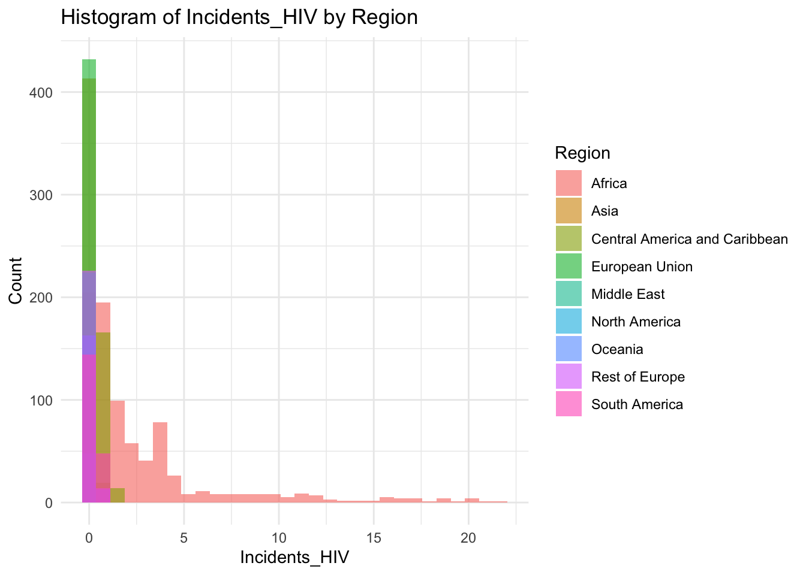
summary(df$Incidents_HIV) Min. 1st Qu. Median Mean 3rd Qu. Max.
0.0100 0.0800 0.1500 0.8943 0.4600 21.6800 Min. 1st Qu. Median Mean 3rd Qu. Max.
0.0100 0.0800 0.1500 0.8943 0.4600 21.6800 Incidents_HIV represents the number of incidents of HIV per 1000 people
Min: 0.01
Median 0.15
Max:21.68
Most of the regions exist in the large spike at just after 0, with Africa making up the bulk of the rest of the graph, this is a possible explanation for Africa’s lower life expectancy
df |>
ggplot() +
geom_boxplot(aes(x=0, y=df$GDP_per_capita))df |>
ggplot() +
geom_histogram(aes(x=df$GDP_per_capita), bins = 30)ggplot(df, aes(x=GDP_per_capita, fill=Region)) +
geom_histogram(bins=30, alpha=0.6, position="identity") +
labs(title="Histogram of GDP_per_capita by Region",
x="GDP_per_capita",
y="Count") +
theme_minimal()summary(df$GDP_per_capita) Min. 1st Qu. Median Mean 3rd Qu. Max.
148 1416 4217 11541 12557 112418 GDP is a representation of the overall wealth of a country
Min:148
Median: 4217
Mean: 11541
Max: 112418
This variable has a very large range, with the majority of the world existing in the lower end of this scale.
Population
df |>
ggplot() +
geom_boxplot(aes(x=0, y=df$Population_mln))df |>
ggplot() +
geom_histogram(aes(x=df$Population_mln), bins = 100) #re-do of the graph with xlim to exclude the outliers
df |>
ggplot() +
geom_histogram(aes(x=df$Population_mln), bins = 30) +
xlim(0,350)Warning: Removed 32 rows containing non-finite outside the scale range
(`stat_bin()`).Warning: Removed 2 rows containing missing values or values outside the scale range
(`geom_bar()`).ggplot(df, aes(x=Population_mln, fill=Region)) +
geom_histogram(bins=30, alpha=0.6, position="identity") +
labs(title="Histogram of Population_mln by Region",
x="Population_mln",
y="Count") +
theme_minimal()summary(df$Population_mln) Min. 1st Qu. Median Mean 3rd Qu. Max.
0.080 2.098 7.850 36.676 23.688 1379.860 Population represents the total number of people living within a nation, in the millions.
Min: 0.08
Median: 7.85
Mean: 36.676
Max: 1379.86
The outliers on the extreme edge are India and China.
Thinness 10 to 19
df |>
ggplot() +
geom_boxplot(aes(x=0, y=df$Thinness_ten_nineteen_years))df |>
ggplot() +
geom_histogram(aes(x=df$Thinness_ten_nineteen_years), bins = 30)ggplot(df, aes(x=Thinness_ten_nineteen_years, fill=Region)) +
geom_histogram(bins=30, alpha=0.6, position="identity") +
labs(title="Histogram of Thinness_ten_nineteen_years by Region",
x="Thinness_ten_nineteen_years",
y="Count") +
theme_minimal()summary(df$Thinness_ten_nineteen_years) Min. 1st Qu. Median Mean 3rd Qu. Max.
0.100 1.600 3.300 4.866 7.200 27.700 Thinness 10-19 represents the percentage of individuals in the age group who are “thin”
Min: 0.1
Median: 3.3
Mean 4.866
Max: 27.7
Why are there two groups?
The two peaks are formed by different regions, the first being Europe, the second being Africa.
df |>
ggplot() +
geom_boxplot(aes(x=0, y=df$Thinness_five_nine_years))df |>
ggplot() +
geom_histogram(aes(x=df$Thinness_five_nine_years), bins = 30)ggplot(df, aes(x=Thinness_five_nine_years, fill=Region)) +
geom_histogram(bins=30, alpha=0.6, position="identity") +
labs(title="Histogram of Thinness_five_nine_years by Region",
x="Thinness_five_nine_years",
y="Count") +
theme_minimal()summary(df$Thinness_five_nine_years) Min. 1st Qu. Median Mean 3rd Qu. Max.
0.1 1.6 3.4 4.9 7.3 28.6 Min: 0.1
Median:3.4
Mean:4.9
Max: 28.6
Why are there two groups?
Same as the 10-19 Thinness, Most of this graph is a mirror of the other Thinness graph.
df |>
ggplot() +
geom_boxplot(aes(x=0, y=df$Schooling))df |>
ggplot() +
geom_histogram(aes(x=df$Schooling), bins = 30)ggplot(df, aes(x=Schooling, fill=Region)) +
geom_histogram(bins=30, alpha=0.6, position="identity") +
labs(title="Histogram of Schooling by Region",
x="Schooling",
y="Count") +
theme_minimal()summary(df$Schooling) Min. 1st Qu. Median Mean 3rd Qu. Max.
1.100 5.100 7.800 7.632 10.300 14.100 Schooling Represents the average years of schooling in the nation.
Min: 1.1
Median: 7.8
Mean: 7.632
Max: 14.1
Schooling is our most evenly distrusted graph so far.
4.3 Covariance Analysis
For Covariance Analysis we need a subset of the data that only has the numeric variables
Standardize the data
sdf <- df |>
select(-Year, everything()) |>
mutate(across(where(is.numeric), scale))# Get only numeric data
numeric_data <- select_if(sdf, is.numeric)
cov_matrix <- cov(numeric_data)
print(cov_matrix) Infant_deaths Under_five_deaths Adult_mortality
Infant_deaths 1.00000000 0.985651346 0.79466086
Under_five_deaths 0.98565135 1.000000000 0.80236112
Adult_mortality 0.79466086 0.802361123 1.00000000
Alcohol_consumption -0.45452615 -0.409367397 -0.24479376
Hepatitis_B -0.51256224 -0.507427407 -0.34488221
Measles -0.52628201 -0.512971742 -0.41615254
BMI -0.66198827 -0.665255042 -0.52286551
Polio -0.74079046 -0.742983474 -0.52422554
Diphtheria -0.72187465 -0.725355032 -0.51380270
Incidents_HIV 0.34945826 0.369617726 0.69911938
GDP_per_capita -0.51228611 -0.469681668 -0.51012141
Population_mln 0.00762199 -0.005234231 -0.05384768
Thinness_ten_nineteen_years 0.49119174 0.466978458 0.38214030
Thinness_five_nine_years 0.47763934 0.450755699 0.37979229
Schooling -0.78851253 -0.773195983 -0.58103548
Life_expectancy -0.92003192 -0.920419134 -0.94536036
Alcohol_consumption Hepatitis_B Measles
Infant_deaths -0.45452615 -0.51256224 -0.52628201
Under_five_deaths -0.40936740 -0.50742741 -0.51297174
Adult_mortality -0.24479376 -0.34488221 -0.41615254
Alcohol_consumption 1.00000000 0.16843582 0.31860293
Hepatitis_B 0.16843582 1.00000000 0.42916779
Measles 0.31860293 0.42916779 1.00000000
BMI 0.28403195 0.34542091 0.41632141
Polio 0.30192623 0.72434526 0.51409629
Diphtheria 0.29901592 0.76178009 0.49405877
Incidents_HIV -0.03411801 -0.07578195 -0.15058000
GDP_per_capita 0.44396595 0.15937504 0.31372372
Population_mln -0.03911866 -0.08239640 -0.09822189
Thinness_ten_nineteen_years -0.44636618 -0.20845350 -0.34070533
Thinness_five_nine_years -0.43302972 -0.21379442 -0.36696995
Schooling 0.61572804 0.34764345 0.49839128
Life_expectancy 0.39915911 0.41780443 0.49001859
BMI Polio Diphtheria Incidents_HIV
Infant_deaths -0.6619883 -0.74079046 -0.72187465 0.34945826
Under_five_deaths -0.6652550 -0.74298347 -0.72535503 0.36961773
Adult_mortality -0.5228655 -0.52422554 -0.51380270 0.69911938
Alcohol_consumption 0.2840319 0.30192623 0.29901592 -0.03411801
Hepatitis_B 0.3454209 0.72434526 0.76178009 -0.07578195
Measles 0.4163214 0.51409629 0.49405877 -0.15058000
BMI 1.0000000 0.45720604 0.42650090 -0.16114208
Polio 0.4572060 1.00000000 0.95317790 -0.14795220
Diphtheria 0.4265009 0.95317790 1.00000000 -0.14693191
Incidents_HIV -0.1611421 -0.14795220 -0.14693191 1.00000000
GDP_per_capita 0.3361796 0.31378567 0.31332094 -0.16958972
Population_mln -0.1664820 -0.03348589 -0.02733598 -0.05803971
Thinness_ten_nineteen_years -0.5964833 -0.31268545 -0.30446625 0.18876454
Thinness_five_nine_years -0.5991122 -0.30699811 -0.29559745 0.19384734
Schooling 0.6354752 0.55276511 0.53562097 -0.20124620
Life_expectancy 0.5984233 0.64121746 0.62754139 -0.55302746
GDP_per_capita Population_mln
Infant_deaths -0.51228611 0.007621990
Under_five_deaths -0.46968167 -0.005234231
Adult_mortality -0.51012141 -0.053847680
Alcohol_consumption 0.44396595 -0.039118659
Hepatitis_B 0.15937504 -0.082396398
Measles 0.31372372 -0.098221891
BMI 0.33617960 -0.166482004
Polio 0.31378567 -0.033485888
Diphtheria 0.31332094 -0.027335977
Incidents_HIV -0.16958972 -0.058039708
GDP_per_capita 1.00000000 -0.040838867
Population_mln -0.04083887 1.000000000
Thinness_ten_nineteen_years -0.37526974 0.256322009
Thinness_five_nine_years -0.38103211 0.258485836
Schooling 0.58062592 -0.033561816
Life_expectancy 0.58308972 0.026297880
Thinness_ten_nineteen_years
Infant_deaths 0.4911917
Under_five_deaths 0.4669785
Adult_mortality 0.3821403
Alcohol_consumption -0.4463662
Hepatitis_B -0.2084535
Measles -0.3407053
BMI -0.5964833
Polio -0.3126855
Diphtheria -0.3044662
Incidents_HIV 0.1887645
GDP_per_capita -0.3752697
Population_mln 0.2563220
Thinness_ten_nineteen_years 1.0000000
Thinness_five_nine_years 0.9387571
Schooling -0.5714852
Life_expectancy -0.4678245
Thinness_five_nine_years Schooling
Infant_deaths 0.4776393 -0.78851253
Under_five_deaths 0.4507557 -0.77319598
Adult_mortality 0.3797923 -0.58103548
Alcohol_consumption -0.4330297 0.61572804
Hepatitis_B -0.2137944 0.34764345
Measles -0.3669700 0.49839128
BMI -0.5991122 0.63547517
Polio -0.3069981 0.55276511
Diphtheria -0.2955975 0.53562097
Incidents_HIV 0.1938473 -0.20124620
GDP_per_capita -0.3810321 0.58062592
Population_mln 0.2584858 -0.03356182
Thinness_ten_nineteen_years 0.9387571 -0.57148516
Thinness_five_nine_years 1.0000000 -0.55137635
Schooling -0.5513764 1.00000000
Life_expectancy -0.4581662 0.73248447
Life_expectancy
Infant_deaths -0.92003192
Under_five_deaths -0.92041913
Adult_mortality -0.94536036
Alcohol_consumption 0.39915911
Hepatitis_B 0.41780443
Measles 0.49001859
BMI 0.59842332
Polio 0.64121746
Diphtheria 0.62754139
Incidents_HIV -0.55302746
GDP_per_capita 0.58308972
Population_mln 0.02629788
Thinness_ten_nineteen_years -0.46782450
Thinness_five_nine_years -0.45816623
Schooling 0.73248447
Life_expectancy 1.00000000Life Expectancy:
covariance_plot("Life_expectancy", "Adult_mortality", df, sdf)Warning: `aes_string()` was deprecated in ggplot2 3.0.0.
ℹ Please use tidy evaluation idioms with `aes()`.
ℹ See also `vignette("ggplot2-in-packages")` for more information.Warning in geom_text(aes(label = paste("Covariance:", round(cov(std_data_frame[[y_val]], : All aesthetics have length 1, but the data has 2864 rows.
ℹ Please consider using `annotate()` or provide this layer with data containing
a single row.covariance_plot("Life_expectancy", "Infant_deaths", df, sdf)Warning in geom_text(aes(label = paste("Covariance:", round(cov(std_data_frame[[y_val]], : All aesthetics have length 1, but the data has 2864 rows.
ℹ Please consider using `annotate()` or provide this layer with data containing
a single row.covariance_plot("Life_expectancy", "Under_five_deaths", df, sdf)Warning in geom_text(aes(label = paste("Covariance:", round(cov(std_data_frame[[y_val]], : All aesthetics have length 1, but the data has 2864 rows.
ℹ Please consider using `annotate()` or provide this layer with data containing
a single row.covariance_plot("Life_expectancy", "Alcohol_consumption", df, sdf)Warning in geom_text(aes(label = paste("Covariance:", round(cov(std_data_frame[[y_val]], : All aesthetics have length 1, but the data has 2864 rows.
ℹ Please consider using `annotate()` or provide this layer with data containing
a single row.covariance_plot("Life_expectancy", "Hepatitis_B", df, sdf)Warning in geom_text(aes(label = paste("Covariance:", round(cov(std_data_frame[[y_val]], : All aesthetics have length 1, but the data has 2864 rows.
ℹ Please consider using `annotate()` or provide this layer with data containing
a single row.covariance_plot("Life_expectancy", "Measles", df, sdf)Warning in geom_text(aes(label = paste("Covariance:", round(cov(std_data_frame[[y_val]], : All aesthetics have length 1, but the data has 2864 rows.
ℹ Please consider using `annotate()` or provide this layer with data containing
a single row.covariance_plot("Life_expectancy", "BMI", df, sdf)Warning in geom_text(aes(label = paste("Covariance:", round(cov(std_data_frame[[y_val]], : All aesthetics have length 1, but the data has 2864 rows.
ℹ Please consider using `annotate()` or provide this layer with data containing
a single row.covariance_plot("Life_expectancy", "Polio", df, sdf)Warning in geom_text(aes(label = paste("Covariance:", round(cov(std_data_frame[[y_val]], : All aesthetics have length 1, but the data has 2864 rows.
ℹ Please consider using `annotate()` or provide this layer with data containing
a single row.covariance_plot("Life_expectancy", "Diphtheria", df, sdf)Warning in geom_text(aes(label = paste("Covariance:", round(cov(std_data_frame[[y_val]], : All aesthetics have length 1, but the data has 2864 rows.
ℹ Please consider using `annotate()` or provide this layer with data containing
a single row.covariance_plot("Life_expectancy", "Incidents_HIV", df, sdf)Warning in geom_text(aes(label = paste("Covariance:", round(cov(std_data_frame[[y_val]], : All aesthetics have length 1, but the data has 2864 rows.
ℹ Please consider using `annotate()` or provide this layer with data containing
a single row.covariance_plot("Life_expectancy", "GDP_per_capita", df, sdf)Warning in geom_text(aes(label = paste("Covariance:", round(cov(std_data_frame[[y_val]], : All aesthetics have length 1, but the data has 2864 rows.
ℹ Please consider using `annotate()` or provide this layer with data containing
a single row.covariance_plot("Life_expectancy", "Population_mln", df, sdf)Warning in geom_text(aes(label = paste("Covariance:", round(cov(std_data_frame[[y_val]], : All aesthetics have length 1, but the data has 2864 rows.
ℹ Please consider using `annotate()` or provide this layer with data containing
a single row.covariance_plot("Life_expectancy", "Thinness_ten_nineteen_years", df, sdf)Warning in geom_text(aes(label = paste("Covariance:", round(cov(std_data_frame[[y_val]], : All aesthetics have length 1, but the data has 2864 rows.
ℹ Please consider using `annotate()` or provide this layer with data containing
a single row.covariance_plot("Life_expectancy", "Thinness_five_nine_years", df, sdf)Warning in geom_text(aes(label = paste("Covariance:", round(cov(std_data_frame[[y_val]], : All aesthetics have length 1, but the data has 2864 rows.
ℹ Please consider using `annotate()` or provide this layer with data containing
a single row.covariance_plot("Life_expectancy", "Schooling", df, sdf)Warning in geom_text(aes(label = paste("Covariance:", round(cov(std_data_frame[[y_val]], : All aesthetics have length 1, but the data has 2864 rows.
ℹ Please consider using `annotate()` or provide this layer with data containing
a single row.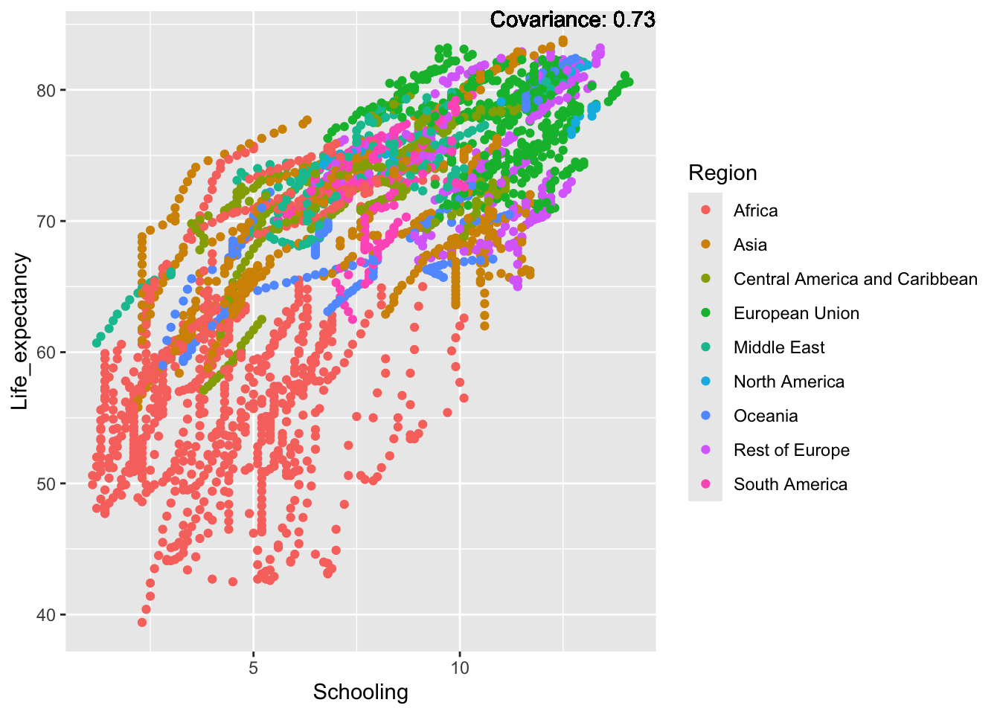
Inference:
Strong negative: adult mortality, infant deaths, under five deaths
Negative: HIV, thinness
Slight positive: Alcohol consumption, Hepatitis B, measles
Positive: BMI, Polio, Diphtheria, Schooling
Alcohol Consumption:
covariance_plot("Alcohol_consumption", "Adult_mortality", df, sdf)Warning in geom_text(aes(label = paste("Covariance:", round(cov(std_data_frame[[y_val]], : All aesthetics have length 1, but the data has 2864 rows.
ℹ Please consider using `annotate()` or provide this layer with data containing
a single row.covariance_plot("Alcohol_consumption", "Infant_deaths", df, sdf)Warning in geom_text(aes(label = paste("Covariance:", round(cov(std_data_frame[[y_val]], : All aesthetics have length 1, but the data has 2864 rows.
ℹ Please consider using `annotate()` or provide this layer with data containing
a single row.covariance_plot("Alcohol_consumption", "Under_five_deaths", df, sdf)Warning in geom_text(aes(label = paste("Covariance:", round(cov(std_data_frame[[y_val]], : All aesthetics have length 1, but the data has 2864 rows.
ℹ Please consider using `annotate()` or provide this layer with data containing
a single row.covariance_plot("Alcohol_consumption", "Life_expectancy", df, sdf)Warning in geom_text(aes(label = paste("Covariance:", round(cov(std_data_frame[[y_val]], : All aesthetics have length 1, but the data has 2864 rows.
ℹ Please consider using `annotate()` or provide this layer with data containing
a single row.covariance_plot("Alcohol_consumption", "Hepatitis_B", df, sdf)Warning in geom_text(aes(label = paste("Covariance:", round(cov(std_data_frame[[y_val]], : All aesthetics have length 1, but the data has 2864 rows.
ℹ Please consider using `annotate()` or provide this layer with data containing
a single row.covariance_plot("Alcohol_consumption", "Measles", df, sdf)Warning in geom_text(aes(label = paste("Covariance:", round(cov(std_data_frame[[y_val]], : All aesthetics have length 1, but the data has 2864 rows.
ℹ Please consider using `annotate()` or provide this layer with data containing
a single row.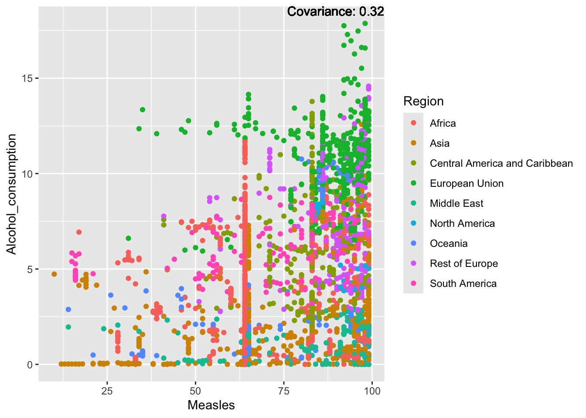
covariance_plot("Alcohol_consumption", "BMI", df, sdf)Warning in geom_text(aes(label = paste("Covariance:", round(cov(std_data_frame[[y_val]], : All aesthetics have length 1, but the data has 2864 rows.
ℹ Please consider using `annotate()` or provide this layer with data containing
a single row.covariance_plot("Alcohol_consumption", "Polio", df, sdf)Warning in geom_text(aes(label = paste("Covariance:", round(cov(std_data_frame[[y_val]], : All aesthetics have length 1, but the data has 2864 rows.
ℹ Please consider using `annotate()` or provide this layer with data containing
a single row.covariance_plot("Alcohol_consumption", "Diphtheria", df, sdf)Warning in geom_text(aes(label = paste("Covariance:", round(cov(std_data_frame[[y_val]], : All aesthetics have length 1, but the data has 2864 rows.
ℹ Please consider using `annotate()` or provide this layer with data containing
a single row.covariance_plot("Alcohol_consumption", "Incidents_HIV", df, sdf)Warning in geom_text(aes(label = paste("Covariance:", round(cov(std_data_frame[[y_val]], : All aesthetics have length 1, but the data has 2864 rows.
ℹ Please consider using `annotate()` or provide this layer with data containing
a single row.covariance_plot("Alcohol_consumption", "GDP_per_capita", df, sdf)Warning in geom_text(aes(label = paste("Covariance:", round(cov(std_data_frame[[y_val]], : All aesthetics have length 1, but the data has 2864 rows.
ℹ Please consider using `annotate()` or provide this layer with data containing
a single row.covariance_plot("Alcohol_consumption", "Population_mln", df, sdf)Warning in geom_text(aes(label = paste("Covariance:", round(cov(std_data_frame[[y_val]], : All aesthetics have length 1, but the data has 2864 rows.
ℹ Please consider using `annotate()` or provide this layer with data containing
a single row.covariance_plot("Alcohol_consumption", "Thinness_ten_nineteen_years", df, sdf)Warning in geom_text(aes(label = paste("Covariance:", round(cov(std_data_frame[[y_val]], : All aesthetics have length 1, but the data has 2864 rows.
ℹ Please consider using `annotate()` or provide this layer with data containing
a single row.covariance_plot("Alcohol_consumption", "Thinness_five_nine_years", df, sdf)Warning in geom_text(aes(label = paste("Covariance:", round(cov(std_data_frame[[y_val]], : All aesthetics have length 1, but the data has 2864 rows.
ℹ Please consider using `annotate()` or provide this layer with data containing
a single row.covariance_plot("Alcohol_consumption", "Schooling", df, sdf)Warning in geom_text(aes(label = paste("Covariance:", round(cov(std_data_frame[[y_val]], : All aesthetics have length 1, but the data has 2864 rows.
ℹ Please consider using `annotate()` or provide this layer with data containing
a single row.Inferences:
There is a positive relationship between Schooling and alcohol consumption,
Some positive relationship: GDP
Some negative relationship: Infant deaths
Strong negative relationship: Population
Other variables have some covariance, but it does not seem to be strongly related.
GDP:
covariance_plot("GDP_per_capita", "Adult_mortality", df, sdf)Warning in geom_text(aes(label = paste("Covariance:", round(cov(std_data_frame[[y_val]], : All aesthetics have length 1, but the data has 2864 rows.
ℹ Please consider using `annotate()` or provide this layer with data containing
a single row.covariance_plot("GDP_per_capita", "Infant_deaths", df, sdf)Warning in geom_text(aes(label = paste("Covariance:", round(cov(std_data_frame[[y_val]], : All aesthetics have length 1, but the data has 2864 rows.
ℹ Please consider using `annotate()` or provide this layer with data containing
a single row.covariance_plot("GDP_per_capita", "Under_five_deaths", df, sdf)Warning in geom_text(aes(label = paste("Covariance:", round(cov(std_data_frame[[y_val]], : All aesthetics have length 1, but the data has 2864 rows.
ℹ Please consider using `annotate()` or provide this layer with data containing
a single row.covariance_plot("GDP_per_capita", "Life_expectancy", df, sdf)Warning in geom_text(aes(label = paste("Covariance:", round(cov(std_data_frame[[y_val]], : All aesthetics have length 1, but the data has 2864 rows.
ℹ Please consider using `annotate()` or provide this layer with data containing
a single row.covariance_plot("GDP_per_capita", "Hepatitis_B", df, sdf)Warning in geom_text(aes(label = paste("Covariance:", round(cov(std_data_frame[[y_val]], : All aesthetics have length 1, but the data has 2864 rows.
ℹ Please consider using `annotate()` or provide this layer with data containing
a single row.covariance_plot("GDP_per_capita", "Measles", df, sdf)Warning in geom_text(aes(label = paste("Covariance:", round(cov(std_data_frame[[y_val]], : All aesthetics have length 1, but the data has 2864 rows.
ℹ Please consider using `annotate()` or provide this layer with data containing
a single row.covariance_plot("GDP_per_capita", "BMI", df, sdf)Warning in geom_text(aes(label = paste("Covariance:", round(cov(std_data_frame[[y_val]], : All aesthetics have length 1, but the data has 2864 rows.
ℹ Please consider using `annotate()` or provide this layer with data containing
a single row.covariance_plot("GDP_per_capita", "Polio", df, sdf)Warning in geom_text(aes(label = paste("Covariance:", round(cov(std_data_frame[[y_val]], : All aesthetics have length 1, but the data has 2864 rows.
ℹ Please consider using `annotate()` or provide this layer with data containing
a single row.
covariance_plot("GDP_per_capita", "Diphtheria", df, sdf)Warning in geom_text(aes(label = paste("Covariance:", round(cov(std_data_frame[[y_val]], : All aesthetics have length 1, but the data has 2864 rows.
ℹ Please consider using `annotate()` or provide this layer with data containing
a single row.covariance_plot("GDP_per_capita", "Incidents_HIV", df, sdf)Warning in geom_text(aes(label = paste("Covariance:", round(cov(std_data_frame[[y_val]], : All aesthetics have length 1, but the data has 2864 rows.
ℹ Please consider using `annotate()` or provide this layer with data containing
a single row.covariance_plot("GDP_per_capita", "Alcohol_consumption", df, sdf)Warning in geom_text(aes(label = paste("Covariance:", round(cov(std_data_frame[[y_val]], : All aesthetics have length 1, but the data has 2864 rows.
ℹ Please consider using `annotate()` or provide this layer with data containing
a single row.covariance_plot("GDP_per_capita", "Population_mln", df, sdf)Warning in geom_text(aes(label = paste("Covariance:", round(cov(std_data_frame[[y_val]], : All aesthetics have length 1, but the data has 2864 rows.
ℹ Please consider using `annotate()` or provide this layer with data containing
a single row.covariance_plot("GDP_per_capita", "Thinness_ten_nineteen_years", df, sdf)Warning in geom_text(aes(label = paste("Covariance:", round(cov(std_data_frame[[y_val]], : All aesthetics have length 1, but the data has 2864 rows.
ℹ Please consider using `annotate()` or provide this layer with data containing
a single row.covariance_plot("GDP_per_capita", "Thinness_five_nine_years", df, sdf)Warning in geom_text(aes(label = paste("Covariance:", round(cov(std_data_frame[[y_val]], : All aesthetics have length 1, but the data has 2864 rows.
ℹ Please consider using `annotate()` or provide this layer with data containing
a single row.covariance_plot("GDP_per_capita", "Schooling", df, sdf)Warning in geom_text(aes(label = paste("Covariance:", round(cov(std_data_frame[[y_val]], : All aesthetics have length 1, but the data has 2864 rows.
ℹ Please consider using `annotate()` or provide this layer with data containing
a single row.Inference:
Some positive relationship: Life expectancy, alcohol consumption, schooling
Some negative relationship: Infant deaths, under five deaths, adult mortality
Adult Mortality:
covariance_plot("Adult_mortality", "GDP_per_capita", df, sdf)Warning in geom_text(aes(label = paste("Covariance:", round(cov(std_data_frame[[y_val]], : All aesthetics have length 1, but the data has 2864 rows.
ℹ Please consider using `annotate()` or provide this layer with data containing
a single row.covariance_plot("Adult_mortality", "Infant_deaths", df, sdf)Warning in geom_text(aes(label = paste("Covariance:", round(cov(std_data_frame[[y_val]], : All aesthetics have length 1, but the data has 2864 rows.
ℹ Please consider using `annotate()` or provide this layer with data containing
a single row.covariance_plot("Adult_mortality", "Under_five_deaths", df, sdf)Warning in geom_text(aes(label = paste("Covariance:", round(cov(std_data_frame[[y_val]], : All aesthetics have length 1, but the data has 2864 rows.
ℹ Please consider using `annotate()` or provide this layer with data containing
a single row.covariance_plot("Adult_mortality", "Life_expectancy", df, sdf)Warning in geom_text(aes(label = paste("Covariance:", round(cov(std_data_frame[[y_val]], : All aesthetics have length 1, but the data has 2864 rows.
ℹ Please consider using `annotate()` or provide this layer with data containing
a single row.covariance_plot("Adult_mortality", "Hepatitis_B", df, sdf)Warning in geom_text(aes(label = paste("Covariance:", round(cov(std_data_frame[[y_val]], : All aesthetics have length 1, but the data has 2864 rows.
ℹ Please consider using `annotate()` or provide this layer with data containing
a single row.covariance_plot("Adult_mortality", "Measles", df, sdf)Warning in geom_text(aes(label = paste("Covariance:", round(cov(std_data_frame[[y_val]], : All aesthetics have length 1, but the data has 2864 rows.
ℹ Please consider using `annotate()` or provide this layer with data containing
a single row.covariance_plot("Adult_mortality", "BMI", df, sdf)Warning in geom_text(aes(label = paste("Covariance:", round(cov(std_data_frame[[y_val]], : All aesthetics have length 1, but the data has 2864 rows.
ℹ Please consider using `annotate()` or provide this layer with data containing
a single row.covariance_plot("Adult_mortality", "Polio", df, sdf)Warning in geom_text(aes(label = paste("Covariance:", round(cov(std_data_frame[[y_val]], : All aesthetics have length 1, but the data has 2864 rows.
ℹ Please consider using `annotate()` or provide this layer with data containing
a single row.covariance_plot("Adult_mortality", "Diphtheria", df, sdf)Warning in geom_text(aes(label = paste("Covariance:", round(cov(std_data_frame[[y_val]], : All aesthetics have length 1, but the data has 2864 rows.
ℹ Please consider using `annotate()` or provide this layer with data containing
a single row.covariance_plot("Adult_mortality", "Incidents_HIV", df, sdf)Warning in geom_text(aes(label = paste("Covariance:", round(cov(std_data_frame[[y_val]], : All aesthetics have length 1, but the data has 2864 rows.
ℹ Please consider using `annotate()` or provide this layer with data containing
a single row.covariance_plot("Adult_mortality", "Alcohol_consumption", df, sdf)Warning in geom_text(aes(label = paste("Covariance:", round(cov(std_data_frame[[y_val]], : All aesthetics have length 1, but the data has 2864 rows.
ℹ Please consider using `annotate()` or provide this layer with data containing
a single row.covariance_plot("Adult_mortality", "Population_mln", df, sdf)Warning in geom_text(aes(label = paste("Covariance:", round(cov(std_data_frame[[y_val]], : All aesthetics have length 1, but the data has 2864 rows.
ℹ Please consider using `annotate()` or provide this layer with data containing
a single row.covariance_plot("Adult_mortality", "Thinness_ten_nineteen_years", df, sdf)Warning in geom_text(aes(label = paste("Covariance:", round(cov(std_data_frame[[y_val]], : All aesthetics have length 1, but the data has 2864 rows.
ℹ Please consider using `annotate()` or provide this layer with data containing
a single row.covariance_plot("Adult_mortality", "Thinness_five_nine_years", df, sdf)Warning in geom_text(aes(label = paste("Covariance:", round(cov(std_data_frame[[y_val]], : All aesthetics have length 1, but the data has 2864 rows.
ℹ Please consider using `annotate()` or provide this layer with data containing
a single row.covariance_plot("Adult_mortality", "Schooling", df, sdf)Warning in geom_text(aes(label = paste("Covariance:", round(cov(std_data_frame[[y_val]], : All aesthetics have length 1, but the data has 2864 rows.
ℹ Please consider using `annotate()` or provide this layer with data containing
a single row.Inferences:
Strong negative: Life expectancy
Negative: BMI, polio Diphtheria, schooling
Positive: HIV
Strong positive: infant deaths, under five deaths
Hepatitis B:
covariance_plot("Hepatitis_B", "GDP_per_capita", df, sdf)Warning in geom_text(aes(label = paste("Covariance:", round(cov(std_data_frame[[y_val]], : All aesthetics have length 1, but the data has 2864 rows.
ℹ Please consider using `annotate()` or provide this layer with data containing
a single row.covariance_plot("Hepatitis_B", "Infant_deaths", df, sdf)Warning in geom_text(aes(label = paste("Covariance:", round(cov(std_data_frame[[y_val]], : All aesthetics have length 1, but the data has 2864 rows.
ℹ Please consider using `annotate()` or provide this layer with data containing
a single row.covariance_plot("Hepatitis_B", "Under_five_deaths", df, sdf)Warning in geom_text(aes(label = paste("Covariance:", round(cov(std_data_frame[[y_val]], : All aesthetics have length 1, but the data has 2864 rows.
ℹ Please consider using `annotate()` or provide this layer with data containing
a single row.covariance_plot("Hepatitis_B", "Life_expectancy", df, sdf)Warning in geom_text(aes(label = paste("Covariance:", round(cov(std_data_frame[[y_val]], : All aesthetics have length 1, but the data has 2864 rows.
ℹ Please consider using `annotate()` or provide this layer with data containing
a single row.covariance_plot("Hepatitis_B", "Adult_mortality", df, sdf)Warning in geom_text(aes(label = paste("Covariance:", round(cov(std_data_frame[[y_val]], : All aesthetics have length 1, but the data has 2864 rows.
ℹ Please consider using `annotate()` or provide this layer with data containing
a single row.covariance_plot("Hepatitis_B", "Measles", df, sdf)Warning in geom_text(aes(label = paste("Covariance:", round(cov(std_data_frame[[y_val]], : All aesthetics have length 1, but the data has 2864 rows.
ℹ Please consider using `annotate()` or provide this layer with data containing
a single row.covariance_plot("Hepatitis_B", "BMI", df, sdf)Warning in geom_text(aes(label = paste("Covariance:", round(cov(std_data_frame[[y_val]], : All aesthetics have length 1, but the data has 2864 rows.
ℹ Please consider using `annotate()` or provide this layer with data containing
a single row.covariance_plot("Hepatitis_B", "Polio", df, sdf)Warning in geom_text(aes(label = paste("Covariance:", round(cov(std_data_frame[[y_val]], : All aesthetics have length 1, but the data has 2864 rows.
ℹ Please consider using `annotate()` or provide this layer with data containing
a single row.covariance_plot("Hepatitis_B", "Diphtheria", df, sdf)Warning in geom_text(aes(label = paste("Covariance:", round(cov(std_data_frame[[y_val]], : All aesthetics have length 1, but the data has 2864 rows.
ℹ Please consider using `annotate()` or provide this layer with data containing
a single row.covariance_plot("Hepatitis_B", "Incidents_HIV", df, sdf)Warning in geom_text(aes(label = paste("Covariance:", round(cov(std_data_frame[[y_val]], : All aesthetics have length 1, but the data has 2864 rows.
ℹ Please consider using `annotate()` or provide this layer with data containing
a single row.covariance_plot("Hepatitis_B", "Alcohol_consumption", df, sdf)Warning in geom_text(aes(label = paste("Covariance:", round(cov(std_data_frame[[y_val]], : All aesthetics have length 1, but the data has 2864 rows.
ℹ Please consider using `annotate()` or provide this layer with data containing
a single row.covariance_plot("Hepatitis_B", "Population_mln", df, sdf)Warning in geom_text(aes(label = paste("Covariance:", round(cov(std_data_frame[[y_val]], : All aesthetics have length 1, but the data has 2864 rows.
ℹ Please consider using `annotate()` or provide this layer with data containing
a single row.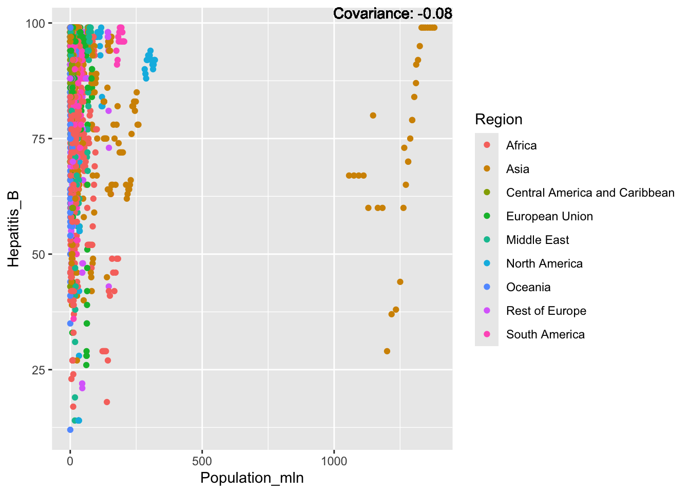
covariance_plot("Hepatitis_B", "Thinness_ten_nineteen_years", df, sdf)Warning in geom_text(aes(label = paste("Covariance:", round(cov(std_data_frame[[y_val]], : All aesthetics have length 1, but the data has 2864 rows.
ℹ Please consider using `annotate()` or provide this layer with data containing
a single row.covariance_plot("Hepatitis_B", "Thinness_five_nine_years", df, sdf)Warning in geom_text(aes(label = paste("Covariance:", round(cov(std_data_frame[[y_val]], : All aesthetics have length 1, but the data has 2864 rows.
ℹ Please consider using `annotate()` or provide this layer with data containing
a single row.covariance_plot("Hepatitis_B", "Schooling", df, sdf)Warning in geom_text(aes(label = paste("Covariance:", round(cov(std_data_frame[[y_val]], : All aesthetics have length 1, but the data has 2864 rows.
ℹ Please consider using `annotate()` or provide this layer with data containing
a single row.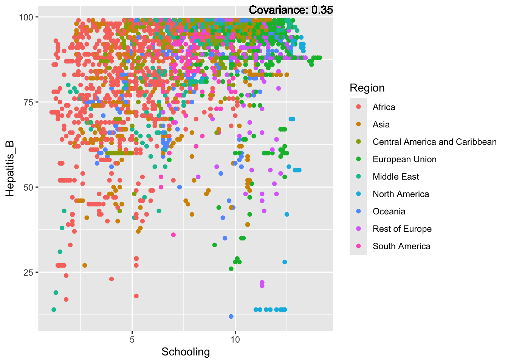
Hepatitis B Inferences:
Positive: Life Expectancy, Alcohol Consumption, Polio, Measles, Diphtheria
Negative: Infant Deaths, Under Five Deaths, Adult mortality
Measles:
covariance_plot("Measles", "GDP_per_capita", df, sdf)Warning in geom_text(aes(label = paste("Covariance:", round(cov(std_data_frame[[y_val]], : All aesthetics have length 1, but the data has 2864 rows.
ℹ Please consider using `annotate()` or provide this layer with data containing
a single row.covariance_plot("Measles", "Infant_deaths", df, sdf)Warning in geom_text(aes(label = paste("Covariance:", round(cov(std_data_frame[[y_val]], : All aesthetics have length 1, but the data has 2864 rows.
ℹ Please consider using `annotate()` or provide this layer with data containing
a single row.covariance_plot("Measles", "Under_five_deaths", df, sdf)Warning in geom_text(aes(label = paste("Covariance:", round(cov(std_data_frame[[y_val]], : All aesthetics have length 1, but the data has 2864 rows.
ℹ Please consider using `annotate()` or provide this layer with data containing
a single row.covariance_plot("Measles", "Life_expectancy", df, sdf)Warning in geom_text(aes(label = paste("Covariance:", round(cov(std_data_frame[[y_val]], : All aesthetics have length 1, but the data has 2864 rows.
ℹ Please consider using `annotate()` or provide this layer with data containing
a single row.
covariance_plot("Measles", "Adult_mortality", df, sdf)Warning in geom_text(aes(label = paste("Covariance:", round(cov(std_data_frame[[y_val]], : All aesthetics have length 1, but the data has 2864 rows.
ℹ Please consider using `annotate()` or provide this layer with data containing
a single row.covariance_plot("Measles", "Hepatitis_B", df, sdf)Warning in geom_text(aes(label = paste("Covariance:", round(cov(std_data_frame[[y_val]], : All aesthetics have length 1, but the data has 2864 rows.
ℹ Please consider using `annotate()` or provide this layer with data containing
a single row.covariance_plot("Measles", "BMI", df, sdf)Warning in geom_text(aes(label = paste("Covariance:", round(cov(std_data_frame[[y_val]], : All aesthetics have length 1, but the data has 2864 rows.
ℹ Please consider using `annotate()` or provide this layer with data containing
a single row.covariance_plot("Measles", "Polio", df, sdf)Warning in geom_text(aes(label = paste("Covariance:", round(cov(std_data_frame[[y_val]], : All aesthetics have length 1, but the data has 2864 rows.
ℹ Please consider using `annotate()` or provide this layer with data containing
a single row.covariance_plot("Measles", "Diphtheria", df, sdf)Warning in geom_text(aes(label = paste("Covariance:", round(cov(std_data_frame[[y_val]], : All aesthetics have length 1, but the data has 2864 rows.
ℹ Please consider using `annotate()` or provide this layer with data containing
a single row.covariance_plot("Measles", "Incidents_HIV", df, sdf)Warning in geom_text(aes(label = paste("Covariance:", round(cov(std_data_frame[[y_val]], : All aesthetics have length 1, but the data has 2864 rows.
ℹ Please consider using `annotate()` or provide this layer with data containing
a single row.covariance_plot("Measles", "Alcohol_consumption", df, sdf)Warning in geom_text(aes(label = paste("Covariance:", round(cov(std_data_frame[[y_val]], : All aesthetics have length 1, but the data has 2864 rows.
ℹ Please consider using `annotate()` or provide this layer with data containing
a single row.
covariance_plot("Measles", "Population_mln", df, sdf)Warning in geom_text(aes(label = paste("Covariance:", round(cov(std_data_frame[[y_val]], : All aesthetics have length 1, but the data has 2864 rows.
ℹ Please consider using `annotate()` or provide this layer with data containing
a single row.covariance_plot("Measles", "Thinness_ten_nineteen_years", df, sdf)Warning in geom_text(aes(label = paste("Covariance:", round(cov(std_data_frame[[y_val]], : All aesthetics have length 1, but the data has 2864 rows.
ℹ Please consider using `annotate()` or provide this layer with data containing
a single row.covariance_plot("Measles", "Thinness_five_nine_years", df, sdf)Warning in geom_text(aes(label = paste("Covariance:", round(cov(std_data_frame[[y_val]], : All aesthetics have length 1, but the data has 2864 rows.
ℹ Please consider using `annotate()` or provide this layer with data containing
a single row.covariance_plot("Measles", "Schooling", df, sdf)Warning in geom_text(aes(label = paste("Covariance:", round(cov(std_data_frame[[y_val]], : All aesthetics have length 1, but the data has 2864 rows.
ℹ Please consider using `annotate()` or provide this layer with data containing
a single row.Measles Inferences:
Positive: Life Expectancy, Schooling, Hepatitis B, BMI, polio, Diphtheria
Negative: Infant Deaths, Under Five Deaths, adult mortality
BMI:
covariance_plot("BMI", "GDP_per_capita", df, sdf)Warning in geom_text(aes(label = paste("Covariance:", round(cov(std_data_frame[[y_val]], : All aesthetics have length 1, but the data has 2864 rows.
ℹ Please consider using `annotate()` or provide this layer with data containing
a single row.covariance_plot("BMI", "Infant_deaths", df, sdf)Warning in geom_text(aes(label = paste("Covariance:", round(cov(std_data_frame[[y_val]], : All aesthetics have length 1, but the data has 2864 rows.
ℹ Please consider using `annotate()` or provide this layer with data containing
a single row.covariance_plot("BMI", "Under_five_deaths", df, sdf)Warning in geom_text(aes(label = paste("Covariance:", round(cov(std_data_frame[[y_val]], : All aesthetics have length 1, but the data has 2864 rows.
ℹ Please consider using `annotate()` or provide this layer with data containing
a single row.covariance_plot("BMI", "Life_expectancy", df, sdf)Warning in geom_text(aes(label = paste("Covariance:", round(cov(std_data_frame[[y_val]], : All aesthetics have length 1, but the data has 2864 rows.
ℹ Please consider using `annotate()` or provide this layer with data containing
a single row.covariance_plot("BMI", "Adult_mortality", df, sdf)Warning in geom_text(aes(label = paste("Covariance:", round(cov(std_data_frame[[y_val]], : All aesthetics have length 1, but the data has 2864 rows.
ℹ Please consider using `annotate()` or provide this layer with data containing
a single row.covariance_plot("BMI", "Hepatitis_B", df, sdf)Warning in geom_text(aes(label = paste("Covariance:", round(cov(std_data_frame[[y_val]], : All aesthetics have length 1, but the data has 2864 rows.
ℹ Please consider using `annotate()` or provide this layer with data containing
a single row.covariance_plot("BMI", "Measles", df, sdf)Warning in geom_text(aes(label = paste("Covariance:", round(cov(std_data_frame[[y_val]], : All aesthetics have length 1, but the data has 2864 rows.
ℹ Please consider using `annotate()` or provide this layer with data containing
a single row.covariance_plot("BMI", "Polio", df, sdf)Warning in geom_text(aes(label = paste("Covariance:", round(cov(std_data_frame[[y_val]], : All aesthetics have length 1, but the data has 2864 rows.
ℹ Please consider using `annotate()` or provide this layer with data containing
a single row.covariance_plot("BMI", "Diphtheria", df, sdf)Warning in geom_text(aes(label = paste("Covariance:", round(cov(std_data_frame[[y_val]], : All aesthetics have length 1, but the data has 2864 rows.
ℹ Please consider using `annotate()` or provide this layer with data containing
a single row.covariance_plot("BMI", "Incidents_HIV", df, sdf)Warning in geom_text(aes(label = paste("Covariance:", round(cov(std_data_frame[[y_val]], : All aesthetics have length 1, but the data has 2864 rows.
ℹ Please consider using `annotate()` or provide this layer with data containing
a single row.covariance_plot("BMI", "Alcohol_consumption", df, sdf)Warning in geom_text(aes(label = paste("Covariance:", round(cov(std_data_frame[[y_val]], : All aesthetics have length 1, but the data has 2864 rows.
ℹ Please consider using `annotate()` or provide this layer with data containing
a single row.covariance_plot("BMI", "Population_mln", df, sdf)Warning in geom_text(aes(label = paste("Covariance:", round(cov(std_data_frame[[y_val]], : All aesthetics have length 1, but the data has 2864 rows.
ℹ Please consider using `annotate()` or provide this layer with data containing
a single row.covariance_plot("BMI", "Thinness_ten_nineteen_years", df, sdf)Warning in geom_text(aes(label = paste("Covariance:", round(cov(std_data_frame[[y_val]], : All aesthetics have length 1, but the data has 2864 rows.
ℹ Please consider using `annotate()` or provide this layer with data containing
a single row.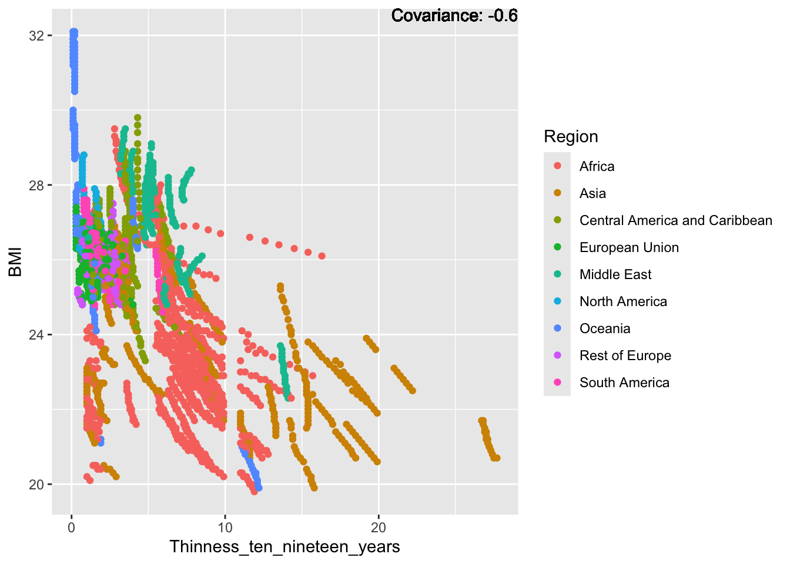
covariance_plot("BMI", "Thinness_five_nine_years", df, sdf)Warning in geom_text(aes(label = paste("Covariance:", round(cov(std_data_frame[[y_val]], : All aesthetics have length 1, but the data has 2864 rows.
ℹ Please consider using `annotate()` or provide this layer with data containing
a single row.covariance_plot("BMI", "Schooling", df, sdf)Warning in geom_text(aes(label = paste("Covariance:", round(cov(std_data_frame[[y_val]], : All aesthetics have length 1, but the data has 2864 rows.
ℹ Please consider using `annotate()` or provide this layer with data containing
a single row.BMI Inferences:
Positive: Life Expectancy, Diphtheria, GDP, measles, polio, schooling
Negative: Thinness, infant deaths, under five deaths, adult mortality
Polio:
covariance_plot("Polio", "GDP_per_capita", df, sdf)Warning in geom_text(aes(label = paste("Covariance:", round(cov(std_data_frame[[y_val]], : All aesthetics have length 1, but the data has 2864 rows.
ℹ Please consider using `annotate()` or provide this layer with data containing
a single row.covariance_plot("Polio", "Infant_deaths", df, sdf)Warning in geom_text(aes(label = paste("Covariance:", round(cov(std_data_frame[[y_val]], : All aesthetics have length 1, but the data has 2864 rows.
ℹ Please consider using `annotate()` or provide this layer with data containing
a single row.covariance_plot("Polio", "Under_five_deaths", df, sdf)Warning in geom_text(aes(label = paste("Covariance:", round(cov(std_data_frame[[y_val]], : All aesthetics have length 1, but the data has 2864 rows.
ℹ Please consider using `annotate()` or provide this layer with data containing
a single row.covariance_plot("Polio", "Life_expectancy", df, sdf)Warning in geom_text(aes(label = paste("Covariance:", round(cov(std_data_frame[[y_val]], : All aesthetics have length 1, but the data has 2864 rows.
ℹ Please consider using `annotate()` or provide this layer with data containing
a single row.covariance_plot("Polio", "Adult_mortality", df, sdf)Warning in geom_text(aes(label = paste("Covariance:", round(cov(std_data_frame[[y_val]], : All aesthetics have length 1, but the data has 2864 rows.
ℹ Please consider using `annotate()` or provide this layer with data containing
a single row.covariance_plot("Polio", "Hepatitis_B", df, sdf)Warning in geom_text(aes(label = paste("Covariance:", round(cov(std_data_frame[[y_val]], : All aesthetics have length 1, but the data has 2864 rows.
ℹ Please consider using `annotate()` or provide this layer with data containing
a single row.covariance_plot("Polio", "Measles", df, sdf)Warning in geom_text(aes(label = paste("Covariance:", round(cov(std_data_frame[[y_val]], : All aesthetics have length 1, but the data has 2864 rows.
ℹ Please consider using `annotate()` or provide this layer with data containing
a single row.covariance_plot("Polio", "BMI", df, sdf)Warning in geom_text(aes(label = paste("Covariance:", round(cov(std_data_frame[[y_val]], : All aesthetics have length 1, but the data has 2864 rows.
ℹ Please consider using `annotate()` or provide this layer with data containing
a single row.covariance_plot("Polio", "Diphtheria", df, sdf)Warning in geom_text(aes(label = paste("Covariance:", round(cov(std_data_frame[[y_val]], : All aesthetics have length 1, but the data has 2864 rows.
ℹ Please consider using `annotate()` or provide this layer with data containing
a single row.covariance_plot("Polio", "Incidents_HIV", df, sdf)Warning in geom_text(aes(label = paste("Covariance:", round(cov(std_data_frame[[y_val]], : All aesthetics have length 1, but the data has 2864 rows.
ℹ Please consider using `annotate()` or provide this layer with data containing
a single row.covariance_plot("Polio", "Alcohol_consumption", df, sdf)Warning in geom_text(aes(label = paste("Covariance:", round(cov(std_data_frame[[y_val]], : All aesthetics have length 1, but the data has 2864 rows.
ℹ Please consider using `annotate()` or provide this layer with data containing
a single row.
covariance_plot("Polio", "Population_mln", df, sdf)Warning in geom_text(aes(label = paste("Covariance:", round(cov(std_data_frame[[y_val]], : All aesthetics have length 1, but the data has 2864 rows.
ℹ Please consider using `annotate()` or provide this layer with data containing
a single row.covariance_plot("Polio", "Thinness_ten_nineteen_years", df, sdf)Warning in geom_text(aes(label = paste("Covariance:", round(cov(std_data_frame[[y_val]], : All aesthetics have length 1, but the data has 2864 rows.
ℹ Please consider using `annotate()` or provide this layer with data containing
a single row.covariance_plot("Polio", "Thinness_five_nine_years", df, sdf)Warning in geom_text(aes(label = paste("Covariance:", round(cov(std_data_frame[[y_val]], : All aesthetics have length 1, but the data has 2864 rows.
ℹ Please consider using `annotate()` or provide this layer with data containing
a single row.covariance_plot("Polio", "Schooling", df, sdf)Warning in geom_text(aes(label = paste("Covariance:", round(cov(std_data_frame[[y_val]], : All aesthetics have length 1, but the data has 2864 rows.
ℹ Please consider using `annotate()` or provide this layer with data containing
a single row.
Polio Inferences:
Strong Positive, Hepatitis B, Diphtheria
Positive: Polio, BMI, Schooling, life expectancy, measles
Negative: Thinness, adult mortality
Strong Negative: Infant Deaths, Under Five deaths
Diphtheria:
covariance_plot("Diphtheria", "GDP_per_capita", df, sdf)Warning in geom_text(aes(label = paste("Covariance:", round(cov(std_data_frame[[y_val]], : All aesthetics have length 1, but the data has 2864 rows.
ℹ Please consider using `annotate()` or provide this layer with data containing
a single row.covariance_plot("Diphtheria", "Infant_deaths", df, sdf)Warning in geom_text(aes(label = paste("Covariance:", round(cov(std_data_frame[[y_val]], : All aesthetics have length 1, but the data has 2864 rows.
ℹ Please consider using `annotate()` or provide this layer with data containing
a single row.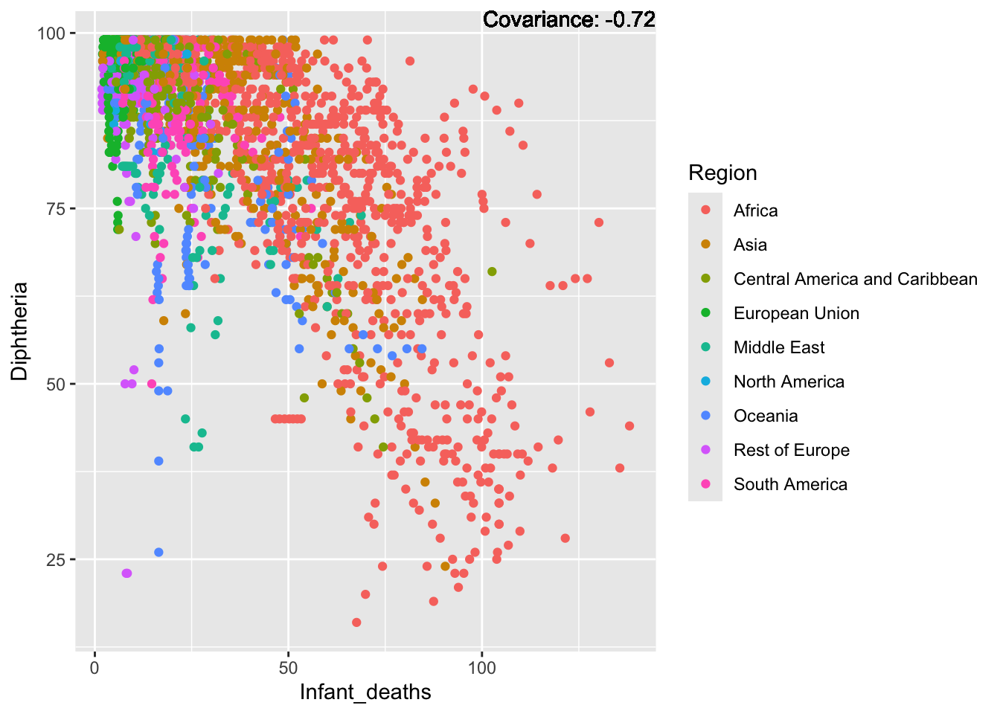
covariance_plot("Diphtheria", "Under_five_deaths", df, sdf)Warning in geom_text(aes(label = paste("Covariance:", round(cov(std_data_frame[[y_val]], : All aesthetics have length 1, but the data has 2864 rows.
ℹ Please consider using `annotate()` or provide this layer with data containing
a single row.covariance_plot("Diphtheria", "Life_expectancy", df, sdf)Warning in geom_text(aes(label = paste("Covariance:", round(cov(std_data_frame[[y_val]], : All aesthetics have length 1, but the data has 2864 rows.
ℹ Please consider using `annotate()` or provide this layer with data containing
a single row.covariance_plot("Diphtheria", "Adult_mortality", df, sdf)Warning in geom_text(aes(label = paste("Covariance:", round(cov(std_data_frame[[y_val]], : All aesthetics have length 1, but the data has 2864 rows.
ℹ Please consider using `annotate()` or provide this layer with data containing
a single row.covariance_plot("Diphtheria", "Hepatitis_B", df, sdf)Warning in geom_text(aes(label = paste("Covariance:", round(cov(std_data_frame[[y_val]], : All aesthetics have length 1, but the data has 2864 rows.
ℹ Please consider using `annotate()` or provide this layer with data containing
a single row.covariance_plot("Diphtheria", "Measles", df, sdf)Warning in geom_text(aes(label = paste("Covariance:", round(cov(std_data_frame[[y_val]], : All aesthetics have length 1, but the data has 2864 rows.
ℹ Please consider using `annotate()` or provide this layer with data containing
a single row.covariance_plot("Diphtheria", "BMI", df, sdf)Warning in geom_text(aes(label = paste("Covariance:", round(cov(std_data_frame[[y_val]], : All aesthetics have length 1, but the data has 2864 rows.
ℹ Please consider using `annotate()` or provide this layer with data containing
a single row.covariance_plot("Diphtheria", "Polio", df, sdf)Warning in geom_text(aes(label = paste("Covariance:", round(cov(std_data_frame[[y_val]], : All aesthetics have length 1, but the data has 2864 rows.
ℹ Please consider using `annotate()` or provide this layer with data containing
a single row.covariance_plot("Diphtheria", "Incidents_HIV", df, sdf)Warning in geom_text(aes(label = paste("Covariance:", round(cov(std_data_frame[[y_val]], : All aesthetics have length 1, but the data has 2864 rows.
ℹ Please consider using `annotate()` or provide this layer with data containing
a single row.covariance_plot("Diphtheria", "Alcohol_consumption", df, sdf)Warning in geom_text(aes(label = paste("Covariance:", round(cov(std_data_frame[[y_val]], : All aesthetics have length 1, but the data has 2864 rows.
ℹ Please consider using `annotate()` or provide this layer with data containing
a single row.covariance_plot("Diphtheria", "Population_mln", df, sdf)Warning in geom_text(aes(label = paste("Covariance:", round(cov(std_data_frame[[y_val]], : All aesthetics have length 1, but the data has 2864 rows.
ℹ Please consider using `annotate()` or provide this layer with data containing
a single row.
covariance_plot("Diphtheria", "Thinness_ten_nineteen_years", df, sdf)Warning in geom_text(aes(label = paste("Covariance:", round(cov(std_data_frame[[y_val]], : All aesthetics have length 1, but the data has 2864 rows.
ℹ Please consider using `annotate()` or provide this layer with data containing
a single row.covariance_plot("Diphtheria", "Thinness_five_nine_years", df, sdf)Warning in geom_text(aes(label = paste("Covariance:", round(cov(std_data_frame[[y_val]], : All aesthetics have length 1, but the data has 2864 rows.
ℹ Please consider using `annotate()` or provide this layer with data containing
a single row.covariance_plot("Diphtheria", "Schooling", df, sdf)Warning in geom_text(aes(label = paste("Covariance:", round(cov(std_data_frame[[y_val]], : All aesthetics have length 1, but the data has 2864 rows.
ℹ Please consider using `annotate()` or provide this layer with data containing
a single row.Diphtheria Inferences:
Strong Positive: Hepatitis B, Polio
Positive: Life Expectancy, Measles, BMI, Schooling
Negative: Thinness, adult mortality
Strong Negative: Infant Deaths, Under Five Deaths
HIV:
covariance_plot("Incidents_HIV", "GDP_per_capita", df, sdf)Warning in geom_text(aes(label = paste("Covariance:", round(cov(std_data_frame[[y_val]], : All aesthetics have length 1, but the data has 2864 rows.
ℹ Please consider using `annotate()` or provide this layer with data containing
a single row.covariance_plot("Incidents_HIV", "Infant_deaths", df, sdf)Warning in geom_text(aes(label = paste("Covariance:", round(cov(std_data_frame[[y_val]], : All aesthetics have length 1, but the data has 2864 rows.
ℹ Please consider using `annotate()` or provide this layer with data containing
a single row.covariance_plot("Incidents_HIV", "Under_five_deaths", df, sdf)Warning in geom_text(aes(label = paste("Covariance:", round(cov(std_data_frame[[y_val]], : All aesthetics have length 1, but the data has 2864 rows.
ℹ Please consider using `annotate()` or provide this layer with data containing
a single row.covariance_plot("Incidents_HIV", "Life_expectancy", df, sdf)Warning in geom_text(aes(label = paste("Covariance:", round(cov(std_data_frame[[y_val]], : All aesthetics have length 1, but the data has 2864 rows.
ℹ Please consider using `annotate()` or provide this layer with data containing
a single row.covariance_plot("Incidents_HIV", "Adult_mortality", df, sdf)Warning in geom_text(aes(label = paste("Covariance:", round(cov(std_data_frame[[y_val]], : All aesthetics have length 1, but the data has 2864 rows.
ℹ Please consider using `annotate()` or provide this layer with data containing
a single row.covariance_plot("Incidents_HIV", "Hepatitis_B", df, sdf)Warning in geom_text(aes(label = paste("Covariance:", round(cov(std_data_frame[[y_val]], : All aesthetics have length 1, but the data has 2864 rows.
ℹ Please consider using `annotate()` or provide this layer with data containing
a single row.covariance_plot("Incidents_HIV", "Measles", df, sdf)Warning in geom_text(aes(label = paste("Covariance:", round(cov(std_data_frame[[y_val]], : All aesthetics have length 1, but the data has 2864 rows.
ℹ Please consider using `annotate()` or provide this layer with data containing
a single row.covariance_plot("Incidents_HIV", "BMI", df, sdf)Warning in geom_text(aes(label = paste("Covariance:", round(cov(std_data_frame[[y_val]], : All aesthetics have length 1, but the data has 2864 rows.
ℹ Please consider using `annotate()` or provide this layer with data containing
a single row.covariance_plot("Incidents_HIV", "Polio", df, sdf)Warning in geom_text(aes(label = paste("Covariance:", round(cov(std_data_frame[[y_val]], : All aesthetics have length 1, but the data has 2864 rows.
ℹ Please consider using `annotate()` or provide this layer with data containing
a single row.covariance_plot("Incidents_HIV", "Diphtheria", df, sdf)Warning in geom_text(aes(label = paste("Covariance:", round(cov(std_data_frame[[y_val]], : All aesthetics have length 1, but the data has 2864 rows.
ℹ Please consider using `annotate()` or provide this layer with data containing
a single row.covariance_plot("Incidents_HIV", "Alcohol_consumption", df, sdf)Warning in geom_text(aes(label = paste("Covariance:", round(cov(std_data_frame[[y_val]], : All aesthetics have length 1, but the data has 2864 rows.
ℹ Please consider using `annotate()` or provide this layer with data containing
a single row.covariance_plot("Incidents_HIV", "Population_mln", df, sdf)Warning in geom_text(aes(label = paste("Covariance:", round(cov(std_data_frame[[y_val]], : All aesthetics have length 1, but the data has 2864 rows.
ℹ Please consider using `annotate()` or provide this layer with data containing
a single row.covariance_plot("Incidents_HIV", "Thinness_ten_nineteen_years", df, sdf)Warning in geom_text(aes(label = paste("Covariance:", round(cov(std_data_frame[[y_val]], : All aesthetics have length 1, but the data has 2864 rows.
ℹ Please consider using `annotate()` or provide this layer with data containing
a single row.covariance_plot("Incidents_HIV", "Thinness_five_nine_years", df, sdf)Warning in geom_text(aes(label = paste("Covariance:", round(cov(std_data_frame[[y_val]], : All aesthetics have length 1, but the data has 2864 rows.
ℹ Please consider using `annotate()` or provide this layer with data containing
a single row.covariance_plot("Incidents_HIV", "Schooling", df, sdf)Warning in geom_text(aes(label = paste("Covariance:", round(cov(std_data_frame[[y_val]], : All aesthetics have length 1, but the data has 2864 rows.
ℹ Please consider using `annotate()` or provide this layer with data containing
a single row.
HIV Inferences:
Positive: Adult mortality
Negative: life expectancy
Conclusion: We may want to separate out Africa for this one, as it seems to be skewing the data.
Population:
covariance_plot("Population_mln", "GDP_per_capita", df, sdf)Warning in geom_text(aes(label = paste("Covariance:", round(cov(std_data_frame[[y_val]], : All aesthetics have length 1, but the data has 2864 rows.
ℹ Please consider using `annotate()` or provide this layer with data containing
a single row.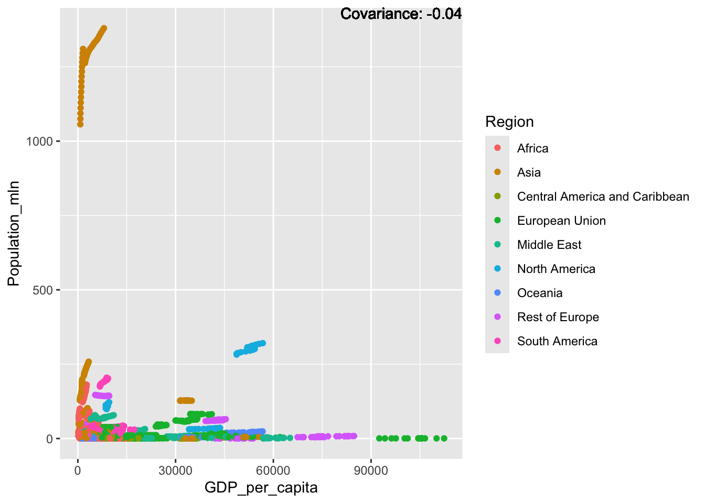
covariance_plot("Population_mln", "Infant_deaths", df, sdf)Warning in geom_text(aes(label = paste("Covariance:", round(cov(std_data_frame[[y_val]], : All aesthetics have length 1, but the data has 2864 rows.
ℹ Please consider using `annotate()` or provide this layer with data containing
a single row.covariance_plot("Population_mln", "Under_five_deaths", df, sdf)Warning in geom_text(aes(label = paste("Covariance:", round(cov(std_data_frame[[y_val]], : All aesthetics have length 1, but the data has 2864 rows.
ℹ Please consider using `annotate()` or provide this layer with data containing
a single row.covariance_plot("Population_mln", "Life_expectancy", df, sdf)Warning in geom_text(aes(label = paste("Covariance:", round(cov(std_data_frame[[y_val]], : All aesthetics have length 1, but the data has 2864 rows.
ℹ Please consider using `annotate()` or provide this layer with data containing
a single row.covariance_plot("Population_mln", "Adult_mortality", df, sdf)Warning in geom_text(aes(label = paste("Covariance:", round(cov(std_data_frame[[y_val]], : All aesthetics have length 1, but the data has 2864 rows.
ℹ Please consider using `annotate()` or provide this layer with data containing
a single row.covariance_plot("Population_mln", "Hepatitis_B", df, sdf)Warning in geom_text(aes(label = paste("Covariance:", round(cov(std_data_frame[[y_val]], : All aesthetics have length 1, but the data has 2864 rows.
ℹ Please consider using `annotate()` or provide this layer with data containing
a single row.covariance_plot("Population_mln", "Measles", df, sdf)Warning in geom_text(aes(label = paste("Covariance:", round(cov(std_data_frame[[y_val]], : All aesthetics have length 1, but the data has 2864 rows.
ℹ Please consider using `annotate()` or provide this layer with data containing
a single row.covariance_plot("Population_mln", "BMI", df, sdf)Warning in geom_text(aes(label = paste("Covariance:", round(cov(std_data_frame[[y_val]], : All aesthetics have length 1, but the data has 2864 rows.
ℹ Please consider using `annotate()` or provide this layer with data containing
a single row.covariance_plot("Population_mln", "Polio", df, sdf)Warning in geom_text(aes(label = paste("Covariance:", round(cov(std_data_frame[[y_val]], : All aesthetics have length 1, but the data has 2864 rows.
ℹ Please consider using `annotate()` or provide this layer with data containing
a single row.covariance_plot("Population_mln", "Diphtheria", df, sdf)Warning in geom_text(aes(label = paste("Covariance:", round(cov(std_data_frame[[y_val]], : All aesthetics have length 1, but the data has 2864 rows.
ℹ Please consider using `annotate()` or provide this layer with data containing
a single row.covariance_plot("Population_mln", "Alcohol_consumption", df, sdf)Warning in geom_text(aes(label = paste("Covariance:", round(cov(std_data_frame[[y_val]], : All aesthetics have length 1, but the data has 2864 rows.
ℹ Please consider using `annotate()` or provide this layer with data containing
a single row.covariance_plot("Population_mln", "Incidents_HIV", df, sdf)Warning in geom_text(aes(label = paste("Covariance:", round(cov(std_data_frame[[y_val]], : All aesthetics have length 1, but the data has 2864 rows.
ℹ Please consider using `annotate()` or provide this layer with data containing
a single row.covariance_plot("Population_mln", "Thinness_ten_nineteen_years", df, sdf)Warning in geom_text(aes(label = paste("Covariance:", round(cov(std_data_frame[[y_val]], : All aesthetics have length 1, but the data has 2864 rows.
ℹ Please consider using `annotate()` or provide this layer with data containing
a single row.covariance_plot("Population_mln", "Thinness_five_nine_years", df, sdf)Warning in geom_text(aes(label = paste("Covariance:", round(cov(std_data_frame[[y_val]], : All aesthetics have length 1, but the data has 2864 rows.
ℹ Please consider using `annotate()` or provide this layer with data containing
a single row.covariance_plot("Population_mln", "Schooling", df, sdf)Warning in geom_text(aes(label = paste("Covariance:", round(cov(std_data_frame[[y_val]], : All aesthetics have length 1, but the data has 2864 rows.
ℹ Please consider using `annotate()` or provide this layer with data containing
a single row.Population Inferences:
Conclusion: We may want to do this again without China and India, as they seems to be skewing the data
Thinness:
covariance_plot("Thinness_ten_nineteen_years", "GDP_per_capita", df, sdf)Warning in geom_text(aes(label = paste("Covariance:", round(cov(std_data_frame[[y_val]], : All aesthetics have length 1, but the data has 2864 rows.
ℹ Please consider using `annotate()` or provide this layer with data containing
a single row.covariance_plot("Thinness_ten_nineteen_years", "Infant_deaths", df, sdf)Warning in geom_text(aes(label = paste("Covariance:", round(cov(std_data_frame[[y_val]], : All aesthetics have length 1, but the data has 2864 rows.
ℹ Please consider using `annotate()` or provide this layer with data containing
a single row.covariance_plot("Thinness_ten_nineteen_years", "Under_five_deaths", df, sdf)Warning in geom_text(aes(label = paste("Covariance:", round(cov(std_data_frame[[y_val]], : All aesthetics have length 1, but the data has 2864 rows.
ℹ Please consider using `annotate()` or provide this layer with data containing
a single row.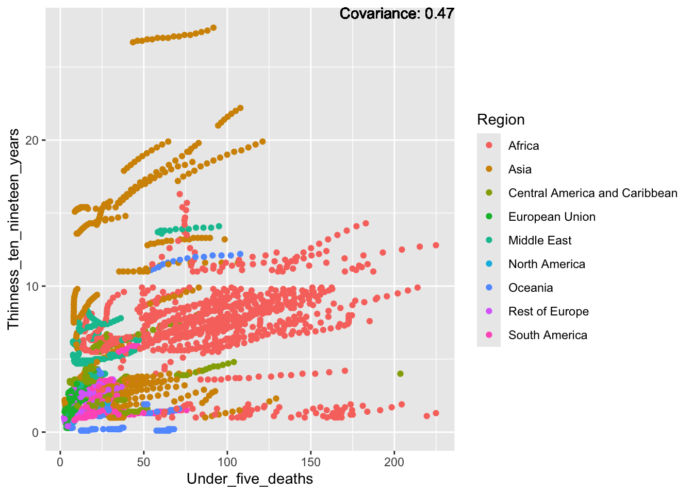
covariance_plot("Thinness_ten_nineteen_years", "Life_expectancy", df, sdf)Warning in geom_text(aes(label = paste("Covariance:", round(cov(std_data_frame[[y_val]], : All aesthetics have length 1, but the data has 2864 rows.
ℹ Please consider using `annotate()` or provide this layer with data containing
a single row.covariance_plot("Thinness_ten_nineteen_years", "Adult_mortality", df, sdf)Warning in geom_text(aes(label = paste("Covariance:", round(cov(std_data_frame[[y_val]], : All aesthetics have length 1, but the data has 2864 rows.
ℹ Please consider using `annotate()` or provide this layer with data containing
a single row.covariance_plot("Thinness_ten_nineteen_years", "Hepatitis_B", df, sdf)Warning in geom_text(aes(label = paste("Covariance:", round(cov(std_data_frame[[y_val]], : All aesthetics have length 1, but the data has 2864 rows.
ℹ Please consider using `annotate()` or provide this layer with data containing
a single row.covariance_plot("Thinness_ten_nineteen_years", "Measles", df, sdf)Warning in geom_text(aes(label = paste("Covariance:", round(cov(std_data_frame[[y_val]], : All aesthetics have length 1, but the data has 2864 rows.
ℹ Please consider using `annotate()` or provide this layer with data containing
a single row.covariance_plot("Thinness_ten_nineteen_years", "BMI", df, sdf)Warning in geom_text(aes(label = paste("Covariance:", round(cov(std_data_frame[[y_val]], : All aesthetics have length 1, but the data has 2864 rows.
ℹ Please consider using `annotate()` or provide this layer with data containing
a single row.covariance_plot("Thinness_ten_nineteen_years", "Polio", df, sdf)Warning in geom_text(aes(label = paste("Covariance:", round(cov(std_data_frame[[y_val]], : All aesthetics have length 1, but the data has 2864 rows.
ℹ Please consider using `annotate()` or provide this layer with data containing
a single row.covariance_plot("Thinness_ten_nineteen_years", "Diphtheria", df, sdf)Warning in geom_text(aes(label = paste("Covariance:", round(cov(std_data_frame[[y_val]], : All aesthetics have length 1, but the data has 2864 rows.
ℹ Please consider using `annotate()` or provide this layer with data containing
a single row.covariance_plot("Thinness_ten_nineteen_years", "Alcohol_consumption", df, sdf)Warning in geom_text(aes(label = paste("Covariance:", round(cov(std_data_frame[[y_val]], : All aesthetics have length 1, but the data has 2864 rows.
ℹ Please consider using `annotate()` or provide this layer with data containing
a single row.
covariance_plot("Thinness_ten_nineteen_years", "Incidents_HIV", df, sdf)Warning in geom_text(aes(label = paste("Covariance:", round(cov(std_data_frame[[y_val]], : All aesthetics have length 1, but the data has 2864 rows.
ℹ Please consider using `annotate()` or provide this layer with data containing
a single row.covariance_plot("Thinness_ten_nineteen_years", "Population_mln", df, sdf)Warning in geom_text(aes(label = paste("Covariance:", round(cov(std_data_frame[[y_val]], : All aesthetics have length 1, but the data has 2864 rows.
ℹ Please consider using `annotate()` or provide this layer with data containing
a single row.covariance_plot("Thinness_ten_nineteen_years", "Thinness_five_nine_years", df, sdf)Warning in geom_text(aes(label = paste("Covariance:", round(cov(std_data_frame[[y_val]], : All aesthetics have length 1, but the data has 2864 rows.
ℹ Please consider using `annotate()` or provide this layer with data containing
a single row.covariance_plot("Thinness_ten_nineteen_years", "Schooling", df, sdf)Warning in geom_text(aes(label = paste("Covariance:", round(cov(std_data_frame[[y_val]], : All aesthetics have length 1, but the data has 2864 rows.
ℹ Please consider using `annotate()` or provide this layer with data containing
a single row.Thinness:
Strong positive: Thinness
Positive: Infant deaths, under five deaths, adult mortality
Negative: Life expectancy, alcohol consumption, BMI, schooling
No surprise that the two thinness are basically one to one.
Schooling:
covariance_plot("Schooling", "GDP_per_capita", df, sdf)Warning in geom_text(aes(label = paste("Covariance:", round(cov(std_data_frame[[y_val]], : All aesthetics have length 1, but the data has 2864 rows.
ℹ Please consider using `annotate()` or provide this layer with data containing
a single row.covariance_plot("Schooling", "Infant_deaths", df, sdf)Warning in geom_text(aes(label = paste("Covariance:", round(cov(std_data_frame[[y_val]], : All aesthetics have length 1, but the data has 2864 rows.
ℹ Please consider using `annotate()` or provide this layer with data containing
a single row.covariance_plot("Schooling", "Under_five_deaths", df, sdf)Warning in geom_text(aes(label = paste("Covariance:", round(cov(std_data_frame[[y_val]], : All aesthetics have length 1, but the data has 2864 rows.
ℹ Please consider using `annotate()` or provide this layer with data containing
a single row.covariance_plot("Schooling", "Life_expectancy", df, sdf)Warning in geom_text(aes(label = paste("Covariance:", round(cov(std_data_frame[[y_val]], : All aesthetics have length 1, but the data has 2864 rows.
ℹ Please consider using `annotate()` or provide this layer with data containing
a single row.covariance_plot("Schooling", "Adult_mortality", df, sdf)Warning in geom_text(aes(label = paste("Covariance:", round(cov(std_data_frame[[y_val]], : All aesthetics have length 1, but the data has 2864 rows.
ℹ Please consider using `annotate()` or provide this layer with data containing
a single row.covariance_plot("Schooling", "Hepatitis_B", df, sdf)Warning in geom_text(aes(label = paste("Covariance:", round(cov(std_data_frame[[y_val]], : All aesthetics have length 1, but the data has 2864 rows.
ℹ Please consider using `annotate()` or provide this layer with data containing
a single row.covariance_plot("Schooling", "Measles", df, sdf)Warning in geom_text(aes(label = paste("Covariance:", round(cov(std_data_frame[[y_val]], : All aesthetics have length 1, but the data has 2864 rows.
ℹ Please consider using `annotate()` or provide this layer with data containing
a single row.covariance_plot("Schooling", "BMI", df, sdf)Warning in geom_text(aes(label = paste("Covariance:", round(cov(std_data_frame[[y_val]], : All aesthetics have length 1, but the data has 2864 rows.
ℹ Please consider using `annotate()` or provide this layer with data containing
a single row.covariance_plot("Schooling", "Polio", df, sdf)Warning in geom_text(aes(label = paste("Covariance:", round(cov(std_data_frame[[y_val]], : All aesthetics have length 1, but the data has 2864 rows.
ℹ Please consider using `annotate()` or provide this layer with data containing
a single row.covariance_plot("Schooling", "Diphtheria", df, sdf)Warning in geom_text(aes(label = paste("Covariance:", round(cov(std_data_frame[[y_val]], : All aesthetics have length 1, but the data has 2864 rows.
ℹ Please consider using `annotate()` or provide this layer with data containing
a single row.covariance_plot("Schooling", "Alcohol_consumption", df, sdf)Warning in geom_text(aes(label = paste("Covariance:", round(cov(std_data_frame[[y_val]], : All aesthetics have length 1, but the data has 2864 rows.
ℹ Please consider using `annotate()` or provide this layer with data containing
a single row.covariance_plot("Schooling", "Incidents_HIV", df, sdf)Warning in geom_text(aes(label = paste("Covariance:", round(cov(std_data_frame[[y_val]], : All aesthetics have length 1, but the data has 2864 rows.
ℹ Please consider using `annotate()` or provide this layer with data containing
a single row.covariance_plot("Schooling", "Population_mln", df, sdf)Warning in geom_text(aes(label = paste("Covariance:", round(cov(std_data_frame[[y_val]], : All aesthetics have length 1, but the data has 2864 rows.
ℹ Please consider using `annotate()` or provide this layer with data containing
a single row.covariance_plot("Schooling", "Thinness_five_nine_years", df, sdf)Warning in geom_text(aes(label = paste("Covariance:", round(cov(std_data_frame[[y_val]], : All aesthetics have length 1, but the data has 2864 rows.
ℹ Please consider using `annotate()` or provide this layer with data containing
a single row.covariance_plot("Schooling", "Thinness_ten_nineteen_years", df, sdf)Warning in geom_text(aes(label = paste("Covariance:", round(cov(std_data_frame[[y_val]], : All aesthetics have length 1, but the data has 2864 rows.
ℹ Please consider using `annotate()` or provide this layer with data containing
a single row.Inferences:
Positive: Life expectancy, alcohol consumption, measles, BMI, polio, diphtheria, GDP
Negative: Infant deaths, under five deaths, adult mortality, thinness
5 Models
5.1 Multiple Regression of Life Expectancy
For testing purposes, we must separate out a portion of the data now. We will be using a 80/20 split. 80% Training, 20% testing.
5.1.1 Splitting the Data
#seed to make this reproducible
set.seed(333)
#split the data
training.samples <- sdf$Life_expectancy |> createDataPartition(p = 0.8, list = FALSE)
train.data <- sdf[training.samples, ]
test.data <- sdf[-training.samples, ]5.1.2 Making the First Model
We are leaving out one of the two economy status variables as they are two halves of a binary variable.
We must also pick between Country and Region, as having both in the model seems to create singularities. For readability sake we will be keeping Region
#make the model
LE_MR <- lm(Life_expectancy ~ . -Economy_status_Developing -Country , data = train.data)
#print summary of the model
summary(LE_MR)
Call:
lm(formula = Life_expectancy ~ . - Economy_status_Developing -
Country, data = train.data)
Residuals:
Min 1Q Median 3Q Max
-0.45439 -0.08736 -0.00297 0.08382 0.60675
Coefficients:
Estimate Std. Error t value Pr(>|t|)
(Intercept) -0.1066983 0.0139377 -7.655 2.84e-14 ***
RegionAsia 0.0408052 0.0121871 3.348 0.000827 ***
RegionCentral America and Caribbean 0.2160099 0.0128928 16.754 < 2e-16 ***
RegionEuropean Union -0.0760235 0.0190799 -3.984 6.98e-05 ***
RegionMiddle East 0.0337327 0.0149020 2.264 0.023691 *
RegionNorth America 0.0806516 0.0254903 3.164 0.001577 **
RegionOceania -0.0846981 0.0154317 -5.489 4.51e-08 ***
RegionRest of Europe 0.0305305 0.0151715 2.012 0.044300 *
RegionSouth America 0.1913290 0.0148165 12.913 < 2e-16 ***
Infant_deaths -0.1453887 0.0179910 -8.081 1.04e-15 ***
Under_five_deaths -0.2410563 0.0181045 -13.315 < 2e-16 ***
Adult_mortality -0.5682994 0.0078518 -72.379 < 2e-16 ***
Alcohol_consumption -0.0015641 0.0049114 -0.318 0.750163
Hepatitis_B -0.0132183 0.0045331 -2.916 0.003581 **
Measles 0.0025920 0.0034613 0.749 0.454030
BMI -0.0307122 0.0052688 -5.829 6.38e-09 ***
Polio 0.0161071 0.0092268 1.746 0.081001 .
Diphtheria -0.0106687 0.0096653 -1.104 0.269792
Incidents_HIV 0.0179509 0.0046521 3.859 0.000117 ***
GDP_per_capita 0.0345499 0.0042100 8.207 3.78e-16 ***
Population_mln -0.0043878 0.0028185 -1.557 0.119671
Thinness_ten_nineteen_years -0.0163594 0.0078495 -2.084 0.037261 *
Thinness_five_nine_years 0.0113872 0.0079526 1.432 0.152314
Schooling 0.0379658 0.0062753 6.050 1.69e-09 ***
Economy_status_Developed1 0.2759249 0.0176359 15.646 < 2e-16 ***
Year2001 0.0036431 0.0150026 0.243 0.808156
Year2002 0.0047602 0.0150254 0.317 0.751417
Year2003 -0.0002601 0.0150909 -0.017 0.986251
Year2004 -0.0019237 0.0151688 -0.127 0.899095
Year2005 0.0060558 0.0152973 0.396 0.692236
Year2006 -0.0028633 0.0149272 -0.192 0.847903
Year2007 0.0080377 0.0152156 0.528 0.597376
Year2008 0.0143914 0.0149241 0.964 0.334998
Year2009 0.0231979 0.0154422 1.502 0.133175
Year2010 0.0260254 0.0152619 1.705 0.088285 .
Year2011 0.0250554 0.0150605 1.664 0.096321 .
Year2012 0.0324372 0.0150364 2.157 0.031093 *
Year2013 0.0367911 0.0155761 2.362 0.018260 *
Year2014 0.0557758 0.0154254 3.616 0.000306 ***
Year2015 0.0570597 0.0154153 3.701 0.000219 ***
---
Signif. codes: 0 '***' 0.001 '**' 0.01 '*' 0.05 '.' 0.1 ' ' 1
Residual standard error: 0.1278 on 2253 degrees of freedom
Multiple R-squared: 0.9841, Adjusted R-squared: 0.9838
F-statistic: 3579 on 39 and 2253 DF, p-value: < 2.2e-16Each variable in the model is given a P_Value, The lower the P_Value is the more significant the attribute is, with the cutoff for significance being 0.05.
From this first model we can see that the following attributes are significant:
| Attribute | P Value |
|---|---|
| Region | Various |
| Infant Deaths | 1.04e-15 |
| Under Five Deaths | 2e-16 |
| Adult Mortality | 2e-16 |
| Hepatitis B | 0.003581 |
| BMI | 6.38e-09 |
| Polio | 0.081001 |
| Incidents HIV | 0.000117 |
| GDP per Capita | 3.78e-16 |
| Thinness_ten_nineteen | 0.037261 |
| Schooling | 1.69e-09 |
| Economy_Status | 2e-16 |
| Year | Various |
This model has a very high R-Squared, but we need to be wary of over-fitting as well as other potential issues such as multicollinearity values.
5.1.3 Pruning the Model
First performing a vif test to check for multicollinearity
vif(LE_MR) GVIF Df GVIF^(1/(2*Df))
Region 52.587643 8 1.281018
Infant_deaths 46.712975 1 6.834689
Under_five_deaths 47.630069 1 6.901454
Adult_mortality 8.543636 1 2.922950
Alcohol_consumption 3.411669 1 1.847070
Hepatitis_B 2.772769 1 1.665163
Measles 1.650280 1 1.284632
BMI 3.983825 1 1.995952
Polio 11.845756 1 3.441766
Diphtheria 13.011222 1 3.607107
Incidents_HIV 2.946336 1 1.716490
GDP_per_capita 2.628907 1 1.621390
Population_mln 1.213445 1 1.101565
Thinness_ten_nineteen_years 8.612156 1 2.934648
Thinness_five_nine_years 8.871877 1 2.978570
Schooling 5.579833 1 2.362167
Economy_status_Developed 7.121377 1 2.668591
Year 1.191581 15 1.005860There are several variables that have high multicollinearity. From the co-variation analysis done in 4.3 we know that Infant deaths and under five deaths are very closely related, as well as the two thinness variables, and Polio and Diphtheria are related.
We should only pick one of the variables in these pairs in order to avoid the issues that arise from having high multicollinearity values. We will be picking the values that have more relevance to the models.
As neither polio nor diphtheria are significant to the model we will be dropping both.
For the other two pairs we will be keeping:
Under Five Deaths
Thinness_ten_nineteen
We will also be dropping Region from the model due to its very high VIF test result.
First, remove the variables from the VIF test.
#make the multiple Regression model for Life Expectancy
LE_MR2 <- lm(Life_expectancy ~ . - Country - Region -Economy_status_Developed -Polio -Diphtheria -Infant_deaths -Thinness_five_nine_years, data = train.data)
#print summary of the model
summary(LE_MR2)
Call:
lm(formula = Life_expectancy ~ . - Country - Region - Economy_status_Developed -
Polio - Diphtheria - Infant_deaths - Thinness_five_nine_years,
data = train.data)
Residuals:
Min 1Q Median 3Q Max
-0.51173 -0.09891 -0.00468 0.09589 0.93355
Coefficients:
Estimate Std. Error t value Pr(>|t|)
(Intercept) 0.050046 0.015922 3.143 0.00169 **
Under_five_deaths -0.386302 0.007926 -48.738 < 2e-16 ***
Adult_mortality -0.596080 0.008809 -67.669 < 2e-16 ***
Alcohol_consumption 0.032940 0.004732 6.961 4.42e-12 ***
Hepatitis_B -0.007311 0.003902 -1.873 0.06113 .
Measles 0.003348 0.003834 0.873 0.38272
BMI -0.035360 0.004961 -7.128 1.36e-12 ***
Incidents_HIV 0.023195 0.005200 4.460 8.59e-06 ***
GDP_per_capita 0.048889 0.004541 10.767 < 2e-16 ***
Population_mln -0.003616 0.003158 -1.145 0.25230
Thinness_ten_nineteen_years -0.017529 0.004373 -4.008 6.31e-05 ***
Schooling 0.033128 0.006463 5.126 3.22e-07 ***
Economy_status_Developing1 -0.079675 0.013134 -6.066 1.53e-09 ***
Year2001 0.007050 0.017306 0.407 0.68374
Year2002 0.002974 0.017316 0.172 0.86366
Year2003 0.001353 0.017396 0.078 0.93801
Year2004 -0.006486 0.017472 -0.371 0.71049
Year2005 -0.002628 0.017620 -0.149 0.88145
Year2006 -0.004286 0.017194 -0.249 0.80316
Year2007 0.002856 0.017520 0.163 0.87054
Year2008 0.006734 0.017153 0.393 0.69465
Year2009 0.011643 0.017742 0.656 0.51172
Year2010 0.020988 0.017506 1.199 0.23068
Year2011 0.013066 0.017255 0.757 0.44901
Year2012 0.022202 0.017205 1.290 0.19701
Year2013 0.025501 0.017784 1.434 0.15173
Year2014 0.041596 0.017626 2.360 0.01836 *
Year2015 0.048717 0.017567 2.773 0.00560 **
---
Signif. codes: 0 '***' 0.001 '**' 0.01 '*' 0.05 '.' 0.1 ' ' 1
Residual standard error: 0.1475 on 2265 degrees of freedom
Multiple R-squared: 0.9787, Adjusted R-squared: 0.9785
F-statistic: 3861 on 27 and 2265 DF, p-value: < 2.2e-16Next remove measles
#make the multiple Regression model for Life Expectancy
LE_MR3 <- lm(Life_expectancy ~ . - Country - Region -Economy_status_Developed -Polio -Diphtheria -Infant_deaths -Thinness_five_nine_years -Measles, data = train.data)
#print summary of the model
summary(LE_MR3)
Call:
lm(formula = Life_expectancy ~ . - Country - Region - Economy_status_Developed -
Polio - Diphtheria - Infant_deaths - Thinness_five_nine_years -
Measles, data = train.data)
Residuals:
Min 1Q Median 3Q Max
-0.51250 -0.09831 -0.00455 0.09440 0.93757
Coefficients:
Estimate Std. Error t value Pr(>|t|)
(Intercept) 0.050020 0.015921 3.142 0.00170 **
Under_five_deaths -0.386432 0.007924 -48.766 < 2e-16 ***
Adult_mortality -0.596671 0.008782 -67.941 < 2e-16 ***
Alcohol_consumption 0.033177 0.004724 7.023 2.86e-12 ***
Hepatitis_B -0.006479 0.003784 -1.712 0.08699 .
BMI -0.035190 0.004957 -7.100 1.67e-12 ***
Incidents_HIV 0.023402 0.005195 4.505 6.98e-06 ***
GDP_per_capita 0.048910 0.004540 10.772 < 2e-16 ***
Population_mln -0.003818 0.003150 -1.212 0.22553
Thinness_ten_nineteen_years -0.017545 0.004373 -4.012 6.21e-05 ***
Schooling 0.033816 0.006415 5.272 1.48e-07 ***
Economy_status_Developing1 -0.079557 0.013132 -6.058 1.61e-09 ***
Year2001 0.007142 0.017304 0.413 0.67986
Year2002 0.003142 0.017314 0.182 0.85599
Year2003 0.001277 0.017395 0.073 0.94150
Year2004 -0.006502 0.017471 -0.372 0.70979
Year2005 -0.002665 0.017619 -0.151 0.87981
Year2006 -0.004253 0.017193 -0.247 0.80462
Year2007 0.002819 0.017519 0.161 0.87219
Year2008 0.006512 0.017151 0.380 0.70422
Year2009 0.011442 0.017739 0.645 0.51898
Year2010 0.020778 0.017503 1.187 0.23531
Year2011 0.012996 0.017254 0.753 0.45140
Year2012 0.022204 0.017204 1.291 0.19696
Year2013 0.025139 0.017778 1.414 0.15749
Year2014 0.041520 0.017625 2.356 0.01857 *
Year2015 0.048636 0.017566 2.769 0.00567 **
---
Signif. codes: 0 '***' 0.001 '**' 0.01 '*' 0.05 '.' 0.1 ' ' 1
Residual standard error: 0.1475 on 2266 degrees of freedom
Multiple R-squared: 0.9787, Adjusted R-squared: 0.9785
F-statistic: 4010 on 26 and 2266 DF, p-value: < 2.2e-16next remove population
#make the multiple Regression model for Life Expectancy
LE_MR4 <- lm(Life_expectancy ~ . - Country - Region -Economy_status_Developed -Polio -Diphtheria -Infant_deaths -Thinness_five_nine_years -Measles -Population_mln, data = train.data)
#print summary of the model
summary(LE_MR4)
Call:
lm(formula = Life_expectancy ~ . - Country - Region - Economy_status_Developed -
Polio - Diphtheria - Infant_deaths - Thinness_five_nine_years -
Measles - Population_mln, data = train.data)
Residuals:
Min 1Q Median 3Q Max
-0.51307 -0.09792 -0.00394 0.09519 0.93736
Coefficients:
Estimate Std. Error t value Pr(>|t|)
(Intercept) 0.050652 0.015914 3.183 0.00148 **
Under_five_deaths -0.386244 0.007924 -48.746 < 2e-16 ***
Adult_mortality -0.595477 0.008728 -68.228 < 2e-16 ***
Alcohol_consumption 0.032976 0.004722 6.984 3.76e-12 ***
Hepatitis_B -0.006014 0.003765 -1.598 0.11028
BMI -0.034346 0.004908 -6.998 3.40e-12 ***
Incidents_HIV 0.023078 0.005188 4.448 9.09e-06 ***
GDP_per_capita 0.049225 0.004533 10.858 < 2e-16 ***
Thinness_ten_nineteen_years -0.018571 0.004290 -4.328 1.57e-05 ***
Schooling 0.033231 0.006397 5.195 2.23e-07 ***
Economy_status_Developing1 -0.080269 0.013121 -6.118 1.11e-09 ***
Year2001 0.007042 0.017306 0.407 0.68412
Year2002 0.003269 0.017315 0.189 0.85028
Year2003 0.001075 0.017396 0.062 0.95073
Year2004 -0.006690 0.017472 -0.383 0.70185
Year2005 -0.002894 0.017619 -0.164 0.86956
Year2006 -0.004419 0.017194 -0.257 0.79717
Year2007 0.002706 0.017521 0.154 0.87726
Year2008 0.006542 0.017152 0.381 0.70295
Year2009 0.011470 0.017741 0.647 0.51799
Year2010 0.020597 0.017505 1.177 0.23946
Year2011 0.012816 0.017255 0.743 0.45772
Year2012 0.022055 0.017205 1.282 0.20000
Year2013 0.024885 0.017779 1.400 0.16173
Year2014 0.041227 0.017625 2.339 0.01941 *
Year2015 0.048649 0.017567 2.769 0.00566 **
---
Signif. codes: 0 '***' 0.001 '**' 0.01 '*' 0.05 '.' 0.1 ' ' 1
Residual standard error: 0.1475 on 2267 degrees of freedom
Multiple R-squared: 0.9787, Adjusted R-squared: 0.9785
F-statistic: 4169 on 25 and 2267 DF, p-value: < 2.2e-16Next we remove year,
#make the multiple Regression model for Life Expectancy
LE_MR5 <- lm(Life_expectancy ~ . - Country - Region -Year -Economy_status_Developed -Polio -Diphtheria -Infant_deaths -Thinness_five_nine_years -Measles -Population_mln , data = train.data)
#print summary of the model
summary(LE_MR5)
Call:
lm(formula = Life_expectancy ~ . - Country - Region - Year -
Economy_status_Developed - Polio - Diphtheria - Infant_deaths -
Thinness_five_nine_years - Measles - Population_mln, data = train.data)
Residuals:
Min 1Q Median 3Q Max
-0.50802 -0.09808 -0.00724 0.09558 0.94591
Coefficients:
Estimate Std. Error t value Pr(>|t|)
(Intercept) 0.060100 0.010872 5.528 3.61e-08 ***
Under_five_deaths -0.384942 0.007929 -48.550 < 2e-16 ***
Adult_mortality -0.598249 0.008715 -68.649 < 2e-16 ***
Alcohol_consumption 0.032231 0.004724 6.823 1.14e-11 ***
Hepatitis_B -0.005156 0.003749 -1.375 0.169
BMI -0.033666 0.004911 -6.855 9.15e-12 ***
Incidents_HIV 0.024005 0.005187 4.628 3.90e-06 ***
GDP_per_capita 0.048657 0.004539 10.721 < 2e-16 ***
Thinness_ten_nineteen_years -0.017914 0.004291 -4.174 3.10e-05 ***
Schooling 0.035912 0.006375 5.633 1.99e-08 ***
Economy_status_Developing1 -0.077447 0.013114 -5.906 4.04e-09 ***
---
Signif. codes: 0 '***' 0.001 '**' 0.01 '*' 0.05 '.' 0.1 ' ' 1
Residual standard error: 0.1478 on 2282 degrees of freedom
Multiple R-squared: 0.9785, Adjusted R-squared: 0.9784
F-statistic: 1.038e+04 on 10 and 2282 DF, p-value: < 2.2e-16Now Hep B has the lowest P Values and is thus next to be removed
#make the multiple Regression model for Life Expectancy
LE_MR6 <- lm(Life_expectancy ~ . - Country - Region -Year -Economy_status_Developed -Polio -Diphtheria -Infant_deaths -Thinness_five_nine_years -Measles -Population_mln -Hepatitis_B, data = train.data)
#print summary of the model
summary(LE_MR6)
Call:
lm(formula = Life_expectancy ~ . - Country - Region - Year -
Economy_status_Developed - Polio - Diphtheria - Infant_deaths -
Thinness_five_nine_years - Measles - Population_mln - Hepatitis_B,
data = train.data)
Residuals:
Min 1Q Median 3Q Max
-0.50728 -0.09775 -0.00759 0.09580 0.94256
Coefficients:
Estimate Std. Error t value Pr(>|t|)
(Intercept) 0.060964 0.010856 5.616 2.19e-08 ***
Under_five_deaths -0.381629 0.007556 -50.510 < 2e-16 ***
Adult_mortality -0.598373 0.008716 -68.653 < 2e-16 ***
Alcohol_consumption 0.032139 0.004724 6.803 1.31e-11 ***
BMI -0.033723 0.004912 -6.865 8.51e-12 ***
Incidents_HIV 0.023336 0.005165 4.518 6.55e-06 ***
GDP_per_capita 0.048763 0.004539 10.744 < 2e-16 ***
Thinness_ten_nineteen_years -0.017852 0.004292 -4.159 3.31e-05 ***
Schooling 0.036260 0.006372 5.691 1.43e-08 ***
Economy_status_Developing1 -0.078664 0.013087 -6.011 2.14e-09 ***
---
Signif. codes: 0 '***' 0.001 '**' 0.01 '*' 0.05 '.' 0.1 ' ' 1
Residual standard error: 0.1479 on 2283 degrees of freedom
Multiple R-squared: 0.9785, Adjusted R-squared: 0.9784
F-statistic: 1.153e+04 on 9 and 2283 DF, p-value: < 2.2e-16ggplot(df, aes(x = Under_five_deaths, y = Life_expectancy)) +
geom_point() +
geom_smooth(method = "lm") +
labs(title = "Life Expectancy vs Under Five Deaths")`geom_smooth()` using formula = 'y ~ x'# Scatter plot for Adult_mortality
ggplot(df, aes(x = Adult_mortality, y = Life_expectancy)) +
geom_point() +
geom_smooth(method = "lm") +
labs(title = "Life Expectancy vs Adult Mortality")`geom_smooth()` using formula = 'y ~ x'# Scatter plot for Alcohol_consumption
ggplot(df, aes(x = Alcohol_consumption, y = Life_expectancy)) +
geom_point() +
geom_smooth(method = "lm") +
labs(title = "Life Expectancy vs Alcohol Consumption")`geom_smooth()` using formula = 'y ~ x'# Scatter plot for BMI
ggplot(df, aes(x = BMI, y = Life_expectancy)) +
geom_point() +
geom_smooth(method = "lm") +
labs(title = "Life Expectancy vs BMI")`geom_smooth()` using formula = 'y ~ x'# Scatter plot for Incidents_HIV
ggplot(df, aes(x = Incidents_HIV, y = Life_expectancy)) +
geom_point() +
geom_smooth(method = "lm") +
labs(title = "Life Expectancy vs Incidents HIV")`geom_smooth()` using formula = 'y ~ x'# Scatter plot for GDP_per_capita
ggplot(df, aes(x = GDP_per_capita, y = Life_expectancy)) +
geom_point() +
geom_smooth(method = "lm") +
labs(title = "Life Expectancy vs GDP per Capita")`geom_smooth()` using formula = 'y ~ x'# Scatter plot for Thinness_ten_nineteen_years
ggplot(df, aes(x = Thinness_ten_nineteen_years, y = Life_expectancy)) +
geom_point() +
geom_smooth(method = "lm") +
labs(title = "Life Expectancy vs Thinness (10-19 years)")`geom_smooth()` using formula = 'y ~ x'# Scatter plot for Schooling
ggplot(df, aes(x = Schooling, y = Life_expectancy)) +
geom_point() +
geom_smooth(method = "lm") +
labs(title = "Life Expectancy vs Schooling")`geom_smooth()` using formula = 'y ~ x'Testing the data
predictions <- predict(LE_MR, newdata = test.data)
rmse <- sqrt(mean(test.data$Life_expectancy - predictions)^2)
print("RMSE 1")[1] "RMSE 1"rmse[1] 0.0006730005predictions <- predict(LE_MR2, newdata = test.data)
rmse <- sqrt(mean(test.data$Life_expectancy - predictions)^2)
print("RMSE 2")[1] "RMSE 2"rmse[1] 0.006045691rmsepredictions <- predict(LE_MR3, newdata = test.data)
rmse <- sqrt(mean(test.data$Life_expectancy - predictions)^2)
print("RMSE 3")[1] "RMSE 3"rmse[1] 0.006045691predictions <- predict(LE_MR4, newdata = test.data)
rmse <- sqrt(mean(test.data$Life_expectancy - predictions)^2)
print("RMSE 4")[1] "RMSE 4"rmse[1] 0.006292047predictions <- predict(LE_MR5, newdata = test.data)
rmse <- sqrt(mean(test.data$Life_expectancy - predictions)^2)
print("RMSE 5")[1] "RMSE 5"rmse[1] 0.006712114predictions <- predict(LE_MR6, newdata = test.data)
rmse <- sqrt(mean(test.data$Life_expectancy - predictions)^2)
print("RMSE 6")[1] "RMSE 6"rmse[1] 0.007220434| Model | RMSE | Adjusted R^2 |
|---|---|---|
| LE_MR | 0.0006730005 | 0.9838 |
| LE_MR2 | 0.006045691 | 0.9785 |
| LE_MR3 | 0.006045691 | 0.9785 |
| LE_MR4 | 0.006292047 | 0.9785 |
| LE_MR5 | 0.006712114 | 0.9784 |
| LE_MR6 | 0.007220434 | 0.9784 |
5.2 Neural Network of Life Expectancy
Splitting the dataset
glimpse(sdf)Rows: 2,864
Columns: 21
$ Country <fct> "Turkiye", "Spain", "India", "Guyana", "Is…
$ Region <fct> Middle East, European Union, Asia, South A…
$ Infant_deaths <dbl[,1]> <matrix[26 x 1]>
$ Under_five_deaths <dbl[,1]> <matrix[26 x 1]>
$ Adult_mortality <dbl[,1]> <matrix[26 x 1]>
$ Alcohol_consumption <dbl[,1]> <matrix[26 x 1]>
$ Hepatitis_B <dbl[,1]> <matrix[26 x 1]>
$ Measles <dbl[,1]> <matrix[26 x 1]>
$ BMI <dbl[,1]> <matrix[26 x 1]>
$ Polio <dbl[,1]> <matrix[26 x 1]>
$ Diphtheria <dbl[,1]> <matrix[26 x 1]>
$ Incidents_HIV <dbl[,1]> <matrix[26 x 1]>
$ GDP_per_capita <dbl[,1]> <matrix[26 x 1]>
$ Population_mln <dbl[,1]> <matrix[26 x 1]>
$ Thinness_ten_nineteen_years <dbl[,1]> <matrix[26 x 1]>
$ Thinness_five_nine_years <dbl[,1]> <matrix[26 x 1]>
$ Schooling <dbl[,1]> <matrix[26 x 1]>
$ Economy_status_Developed <fct> 0, 1, 0, 0, 1, 0, 0, 1, 0, 0, 0, 1, 0,…
$ Economy_status_Developing <fct> 1, 0, 1, 1, 0, 1, 1, 0, 1, 1, 1, 0, 1,…
$ Life_expectancy <dbl[,1]> <matrix[26 x 1]>
$ Year <fct> 2015, 2015, 2007, 2006, 2012, 2006, 20…sdf_num <- sdf %>% select_if(is.numeric)#seed to make this reproducible
set.seed(444)
#split the data
training.samples. <- sdf$Life_expectancy |> createDataPartition(p = 0.8, list = FALSE)
train_data_nn <- sdf_num[training.samples, ]
test_data_nn <- sdf_num[-training.samples, ]Training
# Train the neural network
nn <- neuralnet(Life_expectancy ~ . -Diphtheria - Infant_deaths - Thinness_ten_nineteen_years
, data = train_data_nn, hidden = 3,
linear.output = FALSE)
plot(nn)5.3 SVR model for Life Expectancy
#seed to make this reproducible
set.seed(444)
#split the data
training.samples <- sdf$Life_expectancy |> createDataPartition(p = 0.8, list = FALSE)
train.data.svm <- sdf[training.samples, ]
test.data.svm <- sdf[-training.samples, ]The data needs to be scaled for SVR
# Filter out non-numeric columns
numeric_cols <- sapply(train.data.svm, is.numeric)
train.data.svm_numeric <- train.data.svm[, numeric_cols]
# Scale the numeric features
train.data.svm_scaled <- as.data.frame(scale(train.data.svm_numeric))
# Train the SVR model
LE_SVR <- svm(Life_expectancy ~ . , data = train.data.svm_scaled)Evaluate Model function:
evaluate_SVR_model <- function(model, test_data) {
actual_values <- test_data$Life_expectancy
# Predict
predicted_values <- predict(model, newdata = test_data)
# Calculate evaluation metrics
mae <- mean(abs(predicted_values - actual_values))
mse <- mean((predicted_values - actual_values)^2)
rmse <- sqrt(mse)
r_squared <- cor(predicted_values, actual_values)^2
# Calculate Adjusted R-squared
n <- length(actual_values)
p <- 1 # Assuming you have one predictor, adjust accordingly if you have more
adjusted_r_squared <- 1 - ((1 - r_squared) * (n - 1) / (n - p - 1))
# Print evaluation metrics
cat("Mean Absolute Error (MAE):", mae, "\n")
cat("Mean Squared Error (MSE):", mse, "\n")
cat("Root Mean Squared Error (RMSE):", rmse, "\n")
cat("R-squared:", r_squared, "\n")
cat("Adjusted R-squared:", adjusted_r_squared, "\n")
}Use the function to evaluate the model
evaluate_SVR_model(LE_SVR, test.data.svm)Mean Absolute Error (MAE): 0.07397218
Mean Squared Error (MSE): 0.007783215
Root Mean Squared Error (RMSE): 0.08822253
R-squared: 0.9925463
Adjusted R-squared: 0.9925332 To establish which of the variables are significant we will be removing them one at a time and re-evaluate to see if the model is more or less accurate, Paying attention to the Adjusted R-Square and RMSE especially.
Recursive Feature Elimination - Run this at your own risk!
# Adjust cross-validation settings
# ctrl <- rfeControl(method = "cv", number = 5, verbose = FALSE)
# Use parallel processing
# cores <- parallel::detectCores()
# cl <- makeCluster(cores - 1) # Use one less core to avoid overloading
# registerDoParallel(cl)
# Perform RFE with scaled features
# rfe_result <- rfe(x = train.data.svm_scaled,
# y = train.data.svm$Life_expectancy,
# sizes = c(1:length(predictors)), rfeControl = ctrl)
# Stop parallel processing
# stopCluster(cl)As RFE is not working for the group, we are going to just brute force it by removing attributes one at a time and see if the models numbers get better.
Glimpse of the data just for checking the names
glimpse(train.data.svm_scaled)Rows: 2,293
Columns: 16
$ Infant_deaths <dbl> 0.7590492, 0.0841529, -0.7856332, -0.30562…
$ Under_five_deaths <dbl> 0.55258540, -0.05825996, -0.73598621, -0.3…
$ Adult_mortality <dbl> 0.077338858, 0.261532302, 0.006631077, -0.…
$ Alcohol_consumption <dbl> -0.82494784, 0.20916759, 1.85721042, -1.08…
$ Hepatitis_B <dbl> -1.51935470, 0.53879157, 0.22695123, 0.788…
$ Measles <dbl> -2.31877381, -0.19600053, 1.16475158, 0.51…
$ BMI <dbl> -1.75692499, 0.11855802, 0.39301895, 1.307…
$ Polio <dbl> -1.2747616, 0.3605905, 0.8184891, 0.687660…
$ Diphtheria <dbl> -1.4035975, 0.4296643, 0.8089598, 0.808959…
$ Incidents_HIV <dbl> -0.32326406, -0.04478948, -0.34436062, -0.…
$ GDP_per_capita <dbl> -0.6173467, -0.4339117, -0.1456139, -0.460…
$ Population_mln <dbl> 7.79008710, -0.26103660, -0.19662543, -0.2…
$ Thinness_ten_nineteen_years <dbl> 4.9415722, 0.1836360, -0.5722978, -0.19433…
$ Thinness_five_nine_years <dbl> 5.0464300, 0.1296280, -0.5696505, -0.22001…
$ Schooling <dbl> -0.83048406, 0.08144663, 0.80470200, 0.616…
$ Life_expectancy <dbl> -0.36755454, -0.19705890, 0.25049214, 0.32…#Without Infant_deaths
LE_SVR_Testing <- svm(Life_expectancy ~ . - Infant_deaths, data = train.data.svm_scaled)
evaluate_SVR_model(LE_SVR_Testing, test.data.svm)Mean Absolute Error (MAE): 0.07471295
Mean Squared Error (MSE): 0.007852998
Root Mean Squared Error (RMSE): 0.08861714
R-squared: 0.9924428
Adjusted R-squared: 0.9924295 #Without Under_five_deaths
LE_SVR_Testing <- svm(Life_expectancy ~ . - Under_five_deaths, data = train.data.svm_scaled)
evaluate_SVR_model(LE_SVR_Testing, test.data.svm)Mean Absolute Error (MAE): 0.07619821
Mean Squared Error (MSE): 0.008231436
Root Mean Squared Error (RMSE): 0.09072726
R-squared: 0.9920679
Adjusted R-squared: 0.992054 #Adult_mortality
LE_SVR_Testing <- svm(Life_expectancy ~ . - Adult_mortality, data = train.data.svm_scaled)
evaluate_SVR_model(LE_SVR_Testing, test.data.svm)Mean Absolute Error (MAE): 0.1133804
Mean Squared Error (MSE): 0.02399256
Root Mean Squared Error (RMSE): 0.1548953
R-squared: 0.9766539
Adjusted R-squared: 0.9766129 #Alcohol_consumption
LE_SVR_Testing<- svm(Life_expectancy ~ . - Alcohol_consumption, data = train.data.svm_scaled)
evaluate_SVR_model(LE_SVR_Testing, test.data.svm)Mean Absolute Error (MAE): 0.07744333
Mean Squared Error (MSE): 0.008586509
Root Mean Squared Error (RMSE): 0.09266342
R-squared: 0.9916855
Adjusted R-squared: 0.9916709 #Hepatitis_B
LE_SVR_Testing<- svm(Life_expectancy ~ . - Hepatitis_B , data = train.data.svm_scaled)
evaluate_SVR_model(LE_SVR_Testing, test.data.svm)Mean Absolute Error (MAE): 0.07241759
Mean Squared Error (MSE): 0.007626557
Root Mean Squared Error (RMSE): 0.08733016
R-squared: 0.9926655
Adjusted R-squared: 0.9926526 #Measles
LE_SVR_Testing<- svm(Life_expectancy ~ . - Measles, data = train.data.svm_scaled)
evaluate_SVR_model(LE_SVR_Testing, test.data.svm)Mean Absolute Error (MAE): 0.07528426
Mean Squared Error (MSE): 0.008338268
Root Mean Squared Error (RMSE): 0.09131412
R-squared: 0.9919717
Adjusted R-squared: 0.9919576 #BMI
LE_SVR_Testing<- svm(Life_expectancy ~ . - BMI, data = train.data.svm_scaled)
evaluate_SVR_model(LE_SVR_Testing, test.data.svm)Mean Absolute Error (MAE): 0.07787055
Mean Squared Error (MSE): 0.009170201
Root Mean Squared Error (RMSE): 0.09576117
R-squared: 0.9912598
Adjusted R-squared: 0.9912444 #Polio
LE_SVR_Testing<- svm(Life_expectancy ~ . - Polio, data = train.data.svm_scaled)
evaluate_SVR_model(LE_SVR_Testing, test.data.svm)Mean Absolute Error (MAE): 0.07443335
Mean Squared Error (MSE): 0.007857034
Root Mean Squared Error (RMSE): 0.08863991
R-squared: 0.9925017
Adjusted R-squared: 0.9924885 #Diphtheria
LE_SVR_Testing<- svm(Life_expectancy ~ . - Diphtheria, data = train.data.svm_scaled)
evaluate_SVR_model(LE_SVR_Testing, test.data.svm)Mean Absolute Error (MAE): 0.07355648
Mean Squared Error (MSE): 0.007704026
Root Mean Squared Error (RMSE): 0.08777258
R-squared: 0.9926214
Adjusted R-squared: 0.9926085 #Incidents_HIV
LE_SVR_Testing<- svm(Life_expectancy ~ . - Incidents_HIV, data = train.data.svm_scaled)
evaluate_SVR_model(LE_SVR_Testing, test.data.svm)Mean Absolute Error (MAE): 0.07527161
Mean Squared Error (MSE): 0.008397796
Root Mean Squared Error (RMSE): 0.09163949
R-squared: 0.9918974
Adjusted R-squared: 0.9918832 #GDP_per_capita
LE_SVR_Testing<- svm(Life_expectancy ~ . - GDP_per_capita, data = train.data.svm_scaled)
evaluate_SVR_model(LE_SVR_Testing, test.data.svm)Mean Absolute Error (MAE): 0.07584458
Mean Squared Error (MSE): 0.008198734
Root Mean Squared Error (RMSE): 0.09054686
R-squared: 0.9921686
Adjusted R-squared: 0.9921549 #Population_mln
LE_SVR_Testing<- svm(Life_expectancy ~ . - Population_mln, data = train.data.svm_scaled)
evaluate_SVR_model(LE_SVR_Testing, test.data.svm)Mean Absolute Error (MAE): 0.07505001
Mean Squared Error (MSE): 0.008137925
Root Mean Squared Error (RMSE): 0.09021045
R-squared: 0.992191
Adjusted R-squared: 0.9921773 #Thinness_ten_nineteen_years
LE_SVR_Testing<- svm(Life_expectancy ~ . - Thinness_ten_nineteen_years, data = train.data.svm_scaled)
evaluate_SVR_model(LE_SVR_Testing, test.data.svm)Mean Absolute Error (MAE): 0.07369326
Mean Squared Error (MSE): 0.007717285
Root Mean Squared Error (RMSE): 0.08784808
R-squared: 0.9925828
Adjusted R-squared: 0.9925698 #Thinness_five_nine_years
LE_SVR_Testing<- svm(Life_expectancy ~ . - Thinness_five_nine_years, data = train.data.svm_scaled)
evaluate_SVR_model(LE_SVR_Testing, test.data.svm)Mean Absolute Error (MAE): 0.07403657
Mean Squared Error (MSE): 0.007772499
Root Mean Squared Error (RMSE): 0.08816178
R-squared: 0.9925884
Adjusted R-squared: 0.9925753 #Schooling
LE_SVR_Testing<- svm(Life_expectancy ~ . - Schooling, data = train.data.svm_scaled)
evaluate_SVR_model(LE_SVR_Testing, test.data.svm)Mean Absolute Error (MAE): 0.07663966
Mean Squared Error (MSE): 0.008466487
Root Mean Squared Error (RMSE): 0.09201351
R-squared: 0.9918468
Adjusted R-squared: 0.9918324 Table comparing the different SVR models.
| Removed Variable | MAE | MSE | RMSE | R-Squared | Adjusted R-Squared |
|---|---|---|---|---|---|
| None (Base) | 0.07395971 | 0.00778042 | 0.08820669 | 0.9925481 | 0.992535 |
| Infant deaths | 0.07470623 | 0.007850003 | 0.08860024 | 0.992445 | 0.9924317 |
| Under five deaths | 0.07621305 | 0.008232278 | 0.0907319 | 0.9920679 | 0.992054 |
| Adult mortality | 0.1133804 | 0.02399256 | 0.1548953 | 0.9766539 | 0.9766129 |
| Alcohol consumption | 0.07744333 | 0.008586509 | 0.09266342 | 0.9916855 | 0.9916709 |
| Hepatitis B | 0.07243036 | 0.007626723 | 0.08733111 | 0.992664 | 0.9926511 |
| Measles | 0.07528426 | 0.008338268 | 0.09131412 | 0.9919717 | 0.9919576 |
| BMI | 0.07787055 | 0.009170201 | 0.09576117 | 0.9912598 | 0.9912444 |
| Polio | 0.0744371 | 0.007858702 | 0.08864932 | 0.9925011 | 0.9924879 |
| Diphtheria | 0.07355422 | 0.007703352 | 0.08776874 | 0.9926202 | 0.9926072 |
| Incidents HIV | 0.07527161 | 0.008397796 | 0.09163949 | 0.9918974 | 0.9918832 |
| GDP per capita | 0.07584458 | 0.008198734 | 0.09054686 | 0.9921686 | 0.9921549 |
| Population mln | 0.07505001 | 0.008137925 | 0.09021045 | 0.992191 | 0.9921773 |
| Thinness ten nineteen years | 0.07371203 | 0.007720199 | 0.08786466 | 0.992582 | 0.992569 |
| Thinness five nine years | 0.0740283 | 0.007773223 | 0.08816589 | 0.9925873 | 0.9925743 |
| Schooling | 0.07663966 | 0.008466487 | 0.09201351 | 0.9918468 | 0.9918324 |
The general idea of this table is that the worse the model does without the given variable, the more important the variable is to the SVR model.
The fact that Infant deaths and Under 5 deaths are not showing as significant is interesting, as every other model shows them as being very significant. It is possible that due to the Multicollinearity between them, removing one will not have much of an effect as the other is still present in the model, to test this we will remove both to see what happens.
LE_SVR_Testing<- svm(Life_expectancy ~ . - Under_five_deaths -Infant_deaths, data = train.data.svm_scaled)
evaluate_SVR_model(LE_SVR_Testing, test.data.svm)Mean Absolute Error (MAE): 0.08451521
Mean Squared Error (MSE): 0.01103041
Root Mean Squared Error (RMSE): 0.1050258
R-squared: 0.989295
Adjusted R-squared: 0.9892762 And yes, this is having a very large effect on the model, its not perfectly comparable to the removal of one of the variables at a time, but it is enough for us to assume that Infant Deaths and Under five deaths are more significant that the table initially lets on.
5.3.1 Conclusion of SVR Model
Adult_Mortality, BMI and Schooling all negatively impact the model enough when removed to be significant.
This method is not without it faults however, as it doesn’t identify Under_five_deaths or Infant_deaths as significant. However if both are removed from the model, it causes a significant increase in error of the model. As we laid out in the previous model, these variables are high in multicollinearity. It is very possible that the removal of one of these is beneficial to the model, to prevent over-fitting, and the negative effects of removing these significant attributes is only shown when both are removed.
5.4 Random Forest
Set up the data for Random Forest:
RF_DF <- df[, !(names(df) %in% c("Region", "Country", "Economy_status_Developed", "Economy_status_Developing","Year"))]
summary(RF_DF) Infant_deaths Under_five_deaths Adult_mortality Alcohol_consumption
Min. : 1.80 Min. : 2.300 Min. : 49.38 Min. : 0.000
1st Qu.: 8.10 1st Qu.: 9.675 1st Qu.:106.91 1st Qu.: 1.200
Median : 19.60 Median : 23.100 Median :163.84 Median : 4.020
Mean : 30.36 Mean : 42.938 Mean :192.25 Mean : 4.821
3rd Qu.: 47.35 3rd Qu.: 66.000 3rd Qu.:246.79 3rd Qu.: 7.777
Max. :138.10 Max. :224.900 Max. :719.36 Max. :17.870
Hepatitis_B Measles BMI Polio Diphtheria
Min. :12.00 Min. :10.00 Min. :19.80 Min. : 8.0 Min. :16.00
1st Qu.:78.00 1st Qu.:64.00 1st Qu.:23.20 1st Qu.:81.0 1st Qu.:81.00
Median :89.00 Median :83.00 Median :25.50 Median :93.0 Median :93.00
Mean :84.29 Mean :77.34 Mean :25.03 Mean :86.5 Mean :86.27
3rd Qu.:96.00 3rd Qu.:93.00 3rd Qu.:26.40 3rd Qu.:97.0 3rd Qu.:97.00
Max. :99.00 Max. :99.00 Max. :32.10 Max. :99.0 Max. :99.00
Incidents_HIV GDP_per_capita Population_mln
Min. : 0.0100 Min. : 148 Min. : 0.080
1st Qu.: 0.0800 1st Qu.: 1416 1st Qu.: 2.098
Median : 0.1500 Median : 4217 Median : 7.850
Mean : 0.8943 Mean : 11541 Mean : 36.676
3rd Qu.: 0.4600 3rd Qu.: 12557 3rd Qu.: 23.688
Max. :21.6800 Max. :112418 Max. :1379.860
Thinness_ten_nineteen_years Thinness_five_nine_years Schooling
Min. : 0.100 Min. : 0.1 Min. : 1.100
1st Qu.: 1.600 1st Qu.: 1.6 1st Qu.: 5.100
Median : 3.300 Median : 3.4 Median : 7.800
Mean : 4.866 Mean : 4.9 Mean : 7.632
3rd Qu.: 7.200 3rd Qu.: 7.3 3rd Qu.:10.300
Max. :27.700 Max. :28.6 Max. :14.100
Life_expectancy
Min. :39.40
1st Qu.:62.70
Median :71.40
Mean :68.86
3rd Qu.:75.40
Max. :83.80 Split the data:
# Set seed for reproducibility
set.seed(321)
# Split the data into training and testing sets
train_index_RF <- createDataPartition(RF_DF$Life_expectancy, p = 0.8, list = FALSE)
train_data_RF <- RF_DF[train_index_RF, ]
test_data_RF <- RF_DF[-train_index_RF, ]Making the model:
# Train the random forest model
rf_model <- randomForest(Life_expectancy ~ ., data = train_data_RF, ntree = 500)
# Print the trained model
print(rf_model)
Call:
randomForest(formula = Life_expectancy ~ ., data = train_data_RF, ntree = 500)
Type of random forest: regression
Number of trees: 500
No. of variables tried at each split: 5
Mean of squared residuals: 0.2893711
% Var explained: 99.67Assessing the model:
predicted_values <- predict(rf_model, test_data_RF)
rmse_value <- sqrt(mean((predicted_values - test_data_RF$Life_expectancy)^2))
print(paste("RMSE:", rmse_value))[1] "RMSE: 0.499788784239889"# R-squared
observed_values <- test_data_RF$Life_expectancy
r_squared <- cor(observed_values, predicted_values)^2
print(paste("R-squared:", r_squared))[1] "R-squared: 0.997343879005976"Significance plot:
# Print variable importance
print(rf_model$importance) IncNodePurity
Infant_deaths 38309.0795
Under_five_deaths 62636.1320
Adult_mortality 51316.8181
Alcohol_consumption 1260.6709
Hepatitis_B 330.7512
Measles 1600.2814
BMI 5418.3906
Polio 1192.1789
Diphtheria 770.9613
Incidents_HIV 16695.6777
GDP_per_capita 10782.2387
Population_mln 848.2376
Thinness_ten_nineteen_years 1139.3053
Thinness_five_nine_years 1346.8517
Schooling 7127.5208This gives us another way to answer to see which variables are significant for Life Expectancy.
Interpreting these values:
Infant_deaths, Under_five_deaths, and Adult_mortality have the highest importance scores, indicating that they are the most important predictors of life expectancy in your model.
Alcohol_consumption, BMI, Incidents_HIV, GDP_per_capita, and Schooling also have relatively high importance scores, suggesting that they significantly contribute to the model’s predictive performance.
Hepatitis_B, Measles, Polio, Diphtheria, Population_mln, Thinness_ten_nineteen_years, and Thinness_five_nine_years have relatively less impact on the model compared to others.
This backs up the Multiple Regression model findings.
5.5 Which Variables Most Influence Life Expectancy
From the various model made above, it seems conclusive that the most significant variables for Life Expectancy are Infant_deaths, Under_five_deaths, and Adult_mortality. This is not a surprising conclusion as all three of these variables directly relate to death at a certain age, which is what Life Expectancy is measuring.
The more interesting variables of significance are Alcohol_consumption, BMI, Incidents_HIV, GDP_per_capita, and Schooling.
Incidents of HIV is again no surprise as HIV is a debilitating illness that if untreated will result in death, therefore the higher the rate of HIV the lower the life expectancy.
The other variables in this group are more interesting, and seem to correlate with a nation being more developed, and thus having more access to healthcare, and thus a higher life expectancy.
5.6 Comparing the Models
For each of these models if multiple models were made, we are using the final version of the model for comparison.
| Model | RMSE | Adjusted R^2 |
|---|---|---|
| Multiple Regression | 0.007220434 | 0.9784 |
| Random Forest | 0.5001062729781 | 0.9973385774022 |
| SVR | 0.08820669 | 0.992533 |
According to these numbers, the Multiple Regression model is the most accurate.
5.7 Predict Countries Economic Status from Life Expectancy
5.7.1 Logistic Regression Model
glimpse(df)Rows: 2,864
Columns: 21
$ Country <fct> "Turkiye", "Spain", "India", "Guyana", "Is…
$ Region <fct> Middle East, European Union, Asia, South A…
$ Year <fct> 2015, 2015, 2007, 2006, 2012, 2006, 2015, …
$ Infant_deaths <dbl> 11.1, 2.7, 51.5, 32.8, 3.4, 9.8, 6.6, 8.7,…
$ Under_five_deaths <dbl> 13.0, 3.3, 67.9, 40.5, 4.3, 11.2, 8.2, 10.…
$ Adult_mortality <dbl> 105.8240, 57.9025, 201.0765, 222.1965, 57.…
$ Alcohol_consumption <dbl> 1.32, 10.35, 1.57, 5.68, 2.89, 4.19, 8.06,…
$ Hepatitis_B <dbl> 97, 97, 60, 93, 97, 88, 97, 88, 97, 97, 96…
$ Measles <dbl> 65, 94, 35, 74, 89, 86, 97, 99, 87, 92, 70…
$ BMI <dbl> 27.8, 26.0, 21.2, 25.3, 27.0, 26.4, 26.2, …
$ Polio <dbl> 97, 97, 67, 92, 94, 89, 97, 99, 97, 96, 96…
$ Diphtheria <dbl> 97, 97, 64, 93, 94, 89, 97, 99, 99, 90, 95…
$ Incidents_HIV <dbl> 0.08, 0.09, 0.13, 0.79, 0.08, 0.16, 0.08, …
$ GDP_per_capita <dbl> 11006, 25742, 1076, 4146, 33995, 9110, 931…
$ Population_mln <dbl> 78.53, 46.44, 1183.21, 0.75, 7.91, 4.35, 1…
$ Thinness_ten_nineteen_years <dbl> 4.9, 0.6, 27.1, 5.7, 1.2, 2.0, 2.3, 2.3, 4…
$ Thinness_five_nine_years <dbl> 4.8, 0.5, 28.0, 5.5, 1.1, 1.9, 2.3, 2.3, 3…
$ Schooling <dbl> 7.8, 9.7, 5.0, 7.9, 12.8, 7.9, 12.0, 10.2,…
$ Economy_status_Developed <fct> 0, 1, 0, 0, 1, 0, 0, 1, 0, 0, 0, 1, 0, 0, …
$ Economy_status_Developing <fct> 1, 0, 1, 1, 0, 1, 1, 0, 1, 1, 1, 0, 1, 1, …
$ Life_expectancy <dbl> 76.5, 82.8, 65.4, 67.0, 81.7, 78.2, 71.2, …split the data
set.seed(17)
partition_index <- createDataPartition(df$Economy_status_Developed, p = 0.7, list = FALSE)
train_data_log <- df[partition_index,]
validation_data_log <- df[-partition_index,]make the model
LE_Log <- glm(Economy_status_Developed ~ Life_expectancy,
data = train_data_log,
family = binomial)Summary of the model:
summary(LE_Log)
Call:
glm(formula = Economy_status_Developed ~ Life_expectancy, family = binomial,
data = train_data_log)
Coefficients:
Estimate Std. Error z value Pr(>|z|)
(Intercept) -41.61314 2.17086 -19.17 <2e-16 ***
Life_expectancy 0.53984 0.02848 18.95 <2e-16 ***
---
Signif. codes: 0 '***' 0.001 '**' 0.01 '*' 0.05 '.' 0.1 ' ' 1
(Dispersion parameter for binomial family taken to be 1)
Null deviance: 2045.29 on 2005 degrees of freedom
Residual deviance: 965.27 on 2004 degrees of freedom
AIC: 969.27
Number of Fisher Scoring iterations: 7As expected from our previous question, Life Expectancy is significant to the countries status, with a P Value of 2e-16.
Odds Ratio
odds_ratio <- exp(coef(LE_Log))
print(odds_ratio) (Intercept) Life_expectancy
8.465307e-19 1.715740e+00 Predictions and Confusion matrix
predictions <- predict(LE_Log, validation_data_log, type = "response" )
binary_predictions <- ifelse(predictions > 0.5, 1, 0)
confusion_Matrix <- confusionMatrix(factor(binary_predictions), factor(validation_data_log$Economy_status_Developed))
print(confusion_Matrix)Confusion Matrix and Statistics
Reference
Prediction 0 1
0 639 45
1 42 132
Accuracy : 0.8986
95% CI : (0.8764, 0.918)
No Information Rate : 0.7937
P-Value [Acc > NIR] : <2e-16
Kappa : 0.6884
Mcnemar's Test P-Value : 0.8302
Sensitivity : 0.9383
Specificity : 0.7458
Pos Pred Value : 0.9342
Neg Pred Value : 0.7586
Prevalence : 0.7937
Detection Rate : 0.7448
Detection Prevalence : 0.7972
Balanced Accuracy : 0.8420
'Positive' Class : 0
Overall accuracy: 90.1%
Specificity: 70.62%
Sensitivity: 95.16%
Overall a very good model, going off this confusion matrix. However can we make it better?
ROC Curve
la.roc <- roc(validation_data_log$Economy_status_Developed, predictions)Setting levels: control = 0, case = 1Setting direction: controls < cases plot.roc(la.roc, print.auc = TRUE, print.thres ="best")From this we have learned that the best threshold for this model for predictions would be 0.308
Remake the model with the best threshold.
predictions <- predict(LE_Log, validation_data_log, type = "response" )
binary_predictions <- ifelse(predictions > 0.308, 1, 0)
confusion_Matrix <- confusionMatrix(factor(binary_predictions), factor(validation_data_log$Economy_status_Developed))
print(confusion_Matrix)Confusion Matrix and Statistics
Reference
Prediction 0 1
0 608 34
1 73 143
Accuracy : 0.8753
95% CI : (0.8513, 0.8967)
No Information Rate : 0.7937
P-Value [Acc > NIR] : 2.69e-10
Kappa : 0.6479
Mcnemar's Test P-Value : 0.0002392
Sensitivity : 0.8928
Specificity : 0.8079
Pos Pred Value : 0.9470
Neg Pred Value : 0.6620
Prevalence : 0.7937
Detection Rate : 0.7086
Detection Prevalence : 0.7483
Balanced Accuracy : 0.8504
'Positive' Class : 0
Overall accuracy: 89.76%
Specificity: 83.05%
Sensitivity: 91.5%
Please note that this “Best” model is simply the one with the highest sum of sensitivity and specificity. As we do not have any costs associated with false negatives and false positives it is not possible to determine what the best model for our situation is.
5.7.2 XG Boost Model
glimpse(df)Rows: 2,864
Columns: 21
$ Country <fct> "Turkiye", "Spain", "India", "Guyana", "Is…
$ Region <fct> Middle East, European Union, Asia, South A…
$ Year <fct> 2015, 2015, 2007, 2006, 2012, 2006, 2015, …
$ Infant_deaths <dbl> 11.1, 2.7, 51.5, 32.8, 3.4, 9.8, 6.6, 8.7,…
$ Under_five_deaths <dbl> 13.0, 3.3, 67.9, 40.5, 4.3, 11.2, 8.2, 10.…
$ Adult_mortality <dbl> 105.8240, 57.9025, 201.0765, 222.1965, 57.…
$ Alcohol_consumption <dbl> 1.32, 10.35, 1.57, 5.68, 2.89, 4.19, 8.06,…
$ Hepatitis_B <dbl> 97, 97, 60, 93, 97, 88, 97, 88, 97, 97, 96…
$ Measles <dbl> 65, 94, 35, 74, 89, 86, 97, 99, 87, 92, 70…
$ BMI <dbl> 27.8, 26.0, 21.2, 25.3, 27.0, 26.4, 26.2, …
$ Polio <dbl> 97, 97, 67, 92, 94, 89, 97, 99, 97, 96, 96…
$ Diphtheria <dbl> 97, 97, 64, 93, 94, 89, 97, 99, 99, 90, 95…
$ Incidents_HIV <dbl> 0.08, 0.09, 0.13, 0.79, 0.08, 0.16, 0.08, …
$ GDP_per_capita <dbl> 11006, 25742, 1076, 4146, 33995, 9110, 931…
$ Population_mln <dbl> 78.53, 46.44, 1183.21, 0.75, 7.91, 4.35, 1…
$ Thinness_ten_nineteen_years <dbl> 4.9, 0.6, 27.1, 5.7, 1.2, 2.0, 2.3, 2.3, 4…
$ Thinness_five_nine_years <dbl> 4.8, 0.5, 28.0, 5.5, 1.1, 1.9, 2.3, 2.3, 3…
$ Schooling <dbl> 7.8, 9.7, 5.0, 7.9, 12.8, 7.9, 12.0, 10.2,…
$ Economy_status_Developed <fct> 0, 1, 0, 0, 1, 0, 0, 1, 0, 0, 0, 1, 0, 0, …
$ Economy_status_Developing <fct> 1, 0, 1, 1, 0, 1, 1, 0, 1, 1, 1, 0, 1, 1, …
$ Life_expectancy <dbl> 76.5, 82.8, 65.4, 67.0, 81.7, 78.2, 71.2, …Any factors need to be turned back into numeric values for this model:
xgdf <- df %>%
mutate_if(is.factor, as.numeric)
xgdf <- xgdf %>%
select(Life_expectancy, Economy_status_Developed)Split the data:
set.seed(101)
# Create train-test split
train_index <- createDataPartition(xgdf$Economy_status_Developed, p = 0.8, list = FALSE)
train_data <- xgdf[train_index, ]
test_data <- xgdf[-train_index, ]XGBoost requires a specific format, DMatrix:
# Convert labels to binary format
train_data$Economy_status_Developed <- ifelse(train_data$Economy_status_Developed == 1, 0, 1)
# Train data
dtrain <- xgb.DMatrix(data = as.matrix(train_data[, -ncol(train_data)]), label = train_data$Economy_status_Developed)
# Test data
dtest <- xgb.DMatrix(data = as.matrix(test_data[, -ncol(test_data)]), label = test_data$Economy_status_Developed)Now we can actually make the model:
params <- list(
booster = "gbtree",
objective = "binary:logistic",
eta = 0.1,
gamma = 1,
max_depth = 6,
min_child_weight = 1,
subsample = 0.8,
colsample_bytree = 0.8
)
# Train the model
XG_model <- xgb.train(params = params, data = dtrain, nrounds = 100, watchlist = list(train = dtrain, test = dtest), early_stopping_rounds = 10)[1] train-logloss:0.625828 test-logloss:0.746798
Multiple eval metrics are present. Will use test_logloss for early stopping.
Will train until test_logloss hasn't improved in 10 rounds.
[2] train-logloss:0.570548 test-logloss:0.802487
[3] train-logloss:0.524475 test-logloss:0.858668
[4] train-logloss:0.485445 test-logloss:0.916790
[5] train-logloss:0.452155 test-logloss:0.972407
[6] train-logloss:0.424040 test-logloss:1.029547
[7] train-logloss:0.400175 test-logloss:1.084337
[8] train-logloss:0.379408 test-logloss:1.138477
[9] train-logloss:0.361277 test-logloss:1.194970
[10] train-logloss:0.345439 test-logloss:1.251218
[11] train-logloss:0.331490 test-logloss:1.304111
Stopping. Best iteration:
[1] train-logloss:0.625828 test-logloss:0.746798Predictions and Confusion Matrix:
preds <- predict(XG_model, dtest)
predicted_labels <- ifelse(preds > 0.5, 1, 0)predicted_labels_factor <- factor(predicted_labels, levels = c(0, 1))
actual_labels_factor <- factor(test_data$Economy_status_Developed, levels = c(0, 1))
# Compute the confusion matrix
conf_matrix <- confusionMatrix(predicted_labels_factor, actual_labels_factor)
print(conf_matrix)Confusion Matrix and Statistics
Reference
Prediction 0 1
0 0 445
1 0 19
Accuracy : 0.0409
95% CI : (0.0248, 0.0632)
No Information Rate : 1
P-Value [Acc > NIR] : 1
Kappa : 0
Mcnemar's Test P-Value : <2e-16
Sensitivity : NA
Specificity : 0.04095
Pos Pred Value : NA
Neg Pred Value : NA
Prevalence : 0.00000
Detection Rate : 0.00000
Detection Prevalence : 0.95905
Balanced Accuracy : NA
'Positive' Class : 0
Sensitivity: 96.34%
Specificity: 67.59%
Overall Accuracy: 90.90%
xg.roc <- roc(test_data$Economy_status_Developed, preds)Setting levels: control = 1, case = 2Setting direction: controls < cases plot.roc(xg.roc, print.auc = TRUE, print.thres ="best")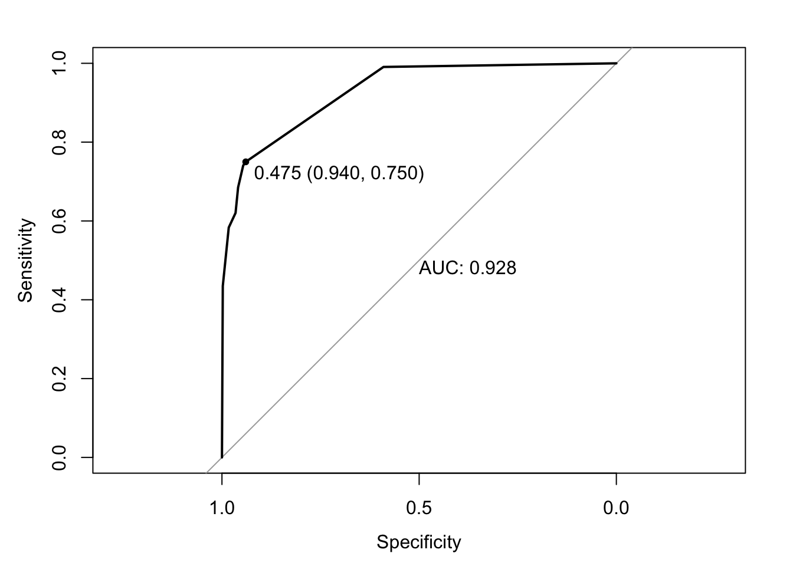
5.7.3 Decision Tree
glimpse(df)Rows: 2,864
Columns: 21
$ Country <fct> "Turkiye", "Spain", "India", "Guyana", "Is…
$ Region <fct> Middle East, European Union, Asia, South A…
$ Year <fct> 2015, 2015, 2007, 2006, 2012, 2006, 2015, …
$ Infant_deaths <dbl> 11.1, 2.7, 51.5, 32.8, 3.4, 9.8, 6.6, 8.7,…
$ Under_five_deaths <dbl> 13.0, 3.3, 67.9, 40.5, 4.3, 11.2, 8.2, 10.…
$ Adult_mortality <dbl> 105.8240, 57.9025, 201.0765, 222.1965, 57.…
$ Alcohol_consumption <dbl> 1.32, 10.35, 1.57, 5.68, 2.89, 4.19, 8.06,…
$ Hepatitis_B <dbl> 97, 97, 60, 93, 97, 88, 97, 88, 97, 97, 96…
$ Measles <dbl> 65, 94, 35, 74, 89, 86, 97, 99, 87, 92, 70…
$ BMI <dbl> 27.8, 26.0, 21.2, 25.3, 27.0, 26.4, 26.2, …
$ Polio <dbl> 97, 97, 67, 92, 94, 89, 97, 99, 97, 96, 96…
$ Diphtheria <dbl> 97, 97, 64, 93, 94, 89, 97, 99, 99, 90, 95…
$ Incidents_HIV <dbl> 0.08, 0.09, 0.13, 0.79, 0.08, 0.16, 0.08, …
$ GDP_per_capita <dbl> 11006, 25742, 1076, 4146, 33995, 9110, 931…
$ Population_mln <dbl> 78.53, 46.44, 1183.21, 0.75, 7.91, 4.35, 1…
$ Thinness_ten_nineteen_years <dbl> 4.9, 0.6, 27.1, 5.7, 1.2, 2.0, 2.3, 2.3, 4…
$ Thinness_five_nine_years <dbl> 4.8, 0.5, 28.0, 5.5, 1.1, 1.9, 2.3, 2.3, 3…
$ Schooling <dbl> 7.8, 9.7, 5.0, 7.9, 12.8, 7.9, 12.0, 10.2,…
$ Economy_status_Developed <fct> 0, 1, 0, 0, 1, 0, 0, 1, 0, 0, 0, 1, 0, 0, …
$ Economy_status_Developing <fct> 1, 0, 1, 1, 0, 1, 1, 0, 1, 1, 1, 0, 1, 1, …
$ Life_expectancy <dbl> 76.5, 82.8, 65.4, 67.0, 81.7, 78.2, 71.2, …Change the data to a factor:
df$Country <- factor(df$Country)
df$Region <- factor(df$Region)
df$Region <- factor(df$Region)
df$Year <- factor(df$Year)
df$Economy_status_Developed <- factor(df$Economy_status_Developed)
df$Economy_status_Developing <- factor(df$Economy_status_Developing)set.seed(127)
# Create the partition
partition_index <- createDataPartition(df$Economy_status_Developed, p = 0.7, list = FALSE)
train_data_DT <- df[partition_index,]
validation_data_DT <- df[-partition_index,]
# Build the decision tree model
tree_model <- rpart(Economy_status_Developed ~ Life_expectancy, data = train_data_DT, method="class")
# Predict using the model
predictions <- predict(tree_model, validation_data_DT, type = "class")
# Compute confusion matrix
confusion_Matrix_dt <- confusionMatrix(predictions, validation_data_DT$Economy_status_Developed)
print(confusion_Matrix_dt)Confusion Matrix and Statistics
Reference
Prediction 0 1
0 654 59
1 27 118
Accuracy : 0.8998
95% CI : (0.8777, 0.919)
No Information Rate : 0.7937
P-Value [Acc > NIR] : < 2.2e-16
Kappa : 0.672
Mcnemar's Test P-Value : 0.0008293
Sensitivity : 0.9604
Specificity : 0.6667
Pos Pred Value : 0.9173
Neg Pred Value : 0.8138
Prevalence : 0.7937
Detection Rate : 0.7622
Detection Prevalence : 0.8310
Balanced Accuracy : 0.8135
'Positive' Class : 0
set.seed(431)
tree_model2 <- train(
Economy_status_Developed ~ Life_expectancy,
data = train_data_DT, method ="rpart",
trControl = trainControl("cv", number = 10),
tuneLength = 10
)
plot(tree_model2)tree_model2$bestTune cp
9 0.4947791# Predict using new the model
predictions <- predict(tree_model2, validation_data_DT)
# Ensure predictions are factors with the same levels as the actual data
predictions <- factor(predictions, levels = levels(validation_data_DT$Economy_status_Developed))
# Compute confusion matrix
confusion_Matrix_dt <- confusionMatrix(predictions, validation_data_DT$Economy_status_Developed)
print(confusion_Matrix_dt)Confusion Matrix and Statistics
Reference
Prediction 0 1
0 654 59
1 27 118
Accuracy : 0.8998
95% CI : (0.8777, 0.919)
No Information Rate : 0.7937
P-Value [Acc > NIR] : < 2.2e-16
Kappa : 0.672
Mcnemar's Test P-Value : 0.0008293
Sensitivity : 0.9604
Specificity : 0.6667
Pos Pred Value : 0.9173
Neg Pred Value : 0.8138
Prevalence : 0.7937
Detection Rate : 0.7622
Detection Prevalence : 0.8310
Balanced Accuracy : 0.8135
'Positive' Class : 0
Sensitivity: 96.04%
Specificity: 66.67%
Overall Accuracy: 89.98%
# Visualize the first model
print(rpart.plot(tree_model))$obj
n= 2006
node), split, n, loss, yval, (yprob)
* denotes terminal node
1) root 2006 415 0 (0.79312064 0.20687936)
2) Life_expectancy< 77.45 1629 111 0 (0.93186004 0.06813996) *
3) Life_expectancy>=77.45 377 73 1 (0.19363395 0.80636605) *
$snipped.nodes
NULL
$xlim
[1] -0.65 1.65
$ylim
[1] -0.6 1.6
$x
[1] 0.50000000 0.03831241 0.96168759
$y
[1] 0.91704414 0.05269236 0.05269236
$branch.x
[,1] [,2] [,3]
x 0.5 0.03831241 0.9616876
NA 0.03831241 0.9616876
NA 0.50000000 0.5000000
$branch.y
[,1] [,2] [,3]
y 1.112783 0.2484309 0.2484309
NA 0.7013644 0.7013644
NA 0.7013644 0.7013644
$labs
[1] "0\n0.21\n100%" "0\n0.07\n81%" "1\n0.81\n19%"
$cex
[1] 1
$boxes
$boxes$x1
[1] 0.39365767 -0.05058696 0.87278822
$boxes$y1
[1] 0.78292839 -0.08142339 -0.08142339
$boxes$x2
[1] 0.6063423 0.1272118 1.0505870
$boxes$y2
[1] 1.1127827 0.2484309 0.2484309
$split.labs
[1] ""
$split.cex
[1] 1 1 1
$split.box
$split.box$x1
[1] 0.1591808 NA NA
$split.box$y1
[1] 0.6397416 NA NA
$split.box$x2
[1] 0.8408192 NA NA
$split.box$y2
[1] 0.7629872 NA NA# Visualize the tuned model
print(rpart.plot(tree_model2$finalModel))
$obj
n= 2006
node), split, n, loss, yval, (yprob)
* denotes terminal node
1) root 2006 415 0 (0.79312064 0.20687936)
2) Life_expectancy< 77.45 1629 111 0 (0.93186004 0.06813996) *
3) Life_expectancy>=77.45 377 73 1 (0.19363395 0.80636605) *
$snipped.nodes
NULL
$xlim
[1] -0.65 1.65
$ylim
[1] -0.6 1.6
$x
[1] 0.50000000 0.03831241 0.96168759
$y
[1] 0.91704414 0.05269236 0.05269236
$branch.x
[,1] [,2] [,3]
x 0.5 0.03831241 0.9616876
NA 0.03831241 0.9616876
NA 0.50000000 0.5000000
$branch.y
[,1] [,2] [,3]
y 1.112783 0.2484309 0.2484309
NA 0.7013644 0.7013644
NA 0.7013644 0.7013644
$labs
[1] "0\n0.21\n100%" "0\n0.07\n81%" "1\n0.81\n19%"
$cex
[1] 1
$boxes
$boxes$x1
[1] 0.39365767 -0.05058696 0.87278822
$boxes$y1
[1] 0.78292839 -0.08142339 -0.08142339
$boxes$x2
[1] 0.6063423 0.1272118 1.0505870
$boxes$y2
[1] 1.1127827 0.2484309 0.2484309
$split.labs
[1] ""
$split.cex
[1] 1 1 1
$split.box
$split.box$x1
[1] 0.1591808 NA NA
$split.box$y1
[1] 0.6397416 NA NA
$split.box$x2
[1] 0.8408192 NA NA
$split.box$y2
[1] 0.7629872 NA NAPruning the tree has made no change in the model. Which, thinking about it makes sense. There isn’t anything to prune.
Make the ROC Curve:
prob_predictions <- predict(tree_model2, validation_data_DT, type = "prob")
roc_curve <- roc(validation_data_DT$Economy_status_Developed, prob_predictions[,2])Setting levels: control = 0, case = 1Setting direction: controls < casesplot(roc_curve, main="ROC Curve" , print.auc = TRUE, print.thres ="best")5.7.4 Comparing the Models
| Logistic | Tree | XGBoost | |
|---|---|---|---|
| Specificity | 83.05% | 66.67% | 67.59% |
| Sensitivity | 91.5% | 96.04% | 96.34% |
| Overall | 89.76% | 89.98% | 90.90% |
For Specificity (Minimize False Positives) the logistic model is the winner, For Sensitivity (Minimize False Negatives) both the decision tree and the XGBoost are comparable.
However none of these models were made with either in mind, and these values could be fine tuned via the ROC Curves provided with each to specialize in either. However our data set doesn’t include any costs for False Positives or negatives, and as such it is difficult to determine a “Best.”
5.8 Deep Analysis
Across almost all of our plots, Africa is the lowest when it comes to life expectancy and the highest when it comes to mortality. Why is that? We will be looking at Africa in depth in order to possibly explain this.
ggplot(df, aes(x = Under_five_deaths, y = Region)) +
geom_point() +
labs(title = "Region vs Under Five Deaths")ggplot(df, aes(x = Adult_mortality, y = Region)) +
geom_point() +
labs(title = "Region vs Adult Mortality")Combining under five deaths and Adult Mortality into one general Mortality variable, note that this will have a gap between 5 and 15, and anyone above 60 will be excluded in this metric.
df$Mortality <- df$Under_five_deaths + df$Adult_mortality
ggplot(df, aes(x = Mortality, y = Region)) +
geom_point() +
labs(title = "Region vs Mortality")Next we will break down Africa into the countries within it for further analysis, and examine each variable in our data set this way to look for possible explanations.
filtered_df <- df %>%
filter(Region == "Africa")
ggplot(filtered_df, aes(x = Mortality, y = Country)) +
geom_point() +
labs(title = "Region vs Mortality")ggplot(filtered_df, aes(x = BMI, y = Country)) +
geom_point() +
labs(title = "African Country vs BMI")ggplot(filtered_df, aes(x = Alcohol_consumption, y = Country)) +
geom_point() +
labs(title = "African Country vs Alcohol")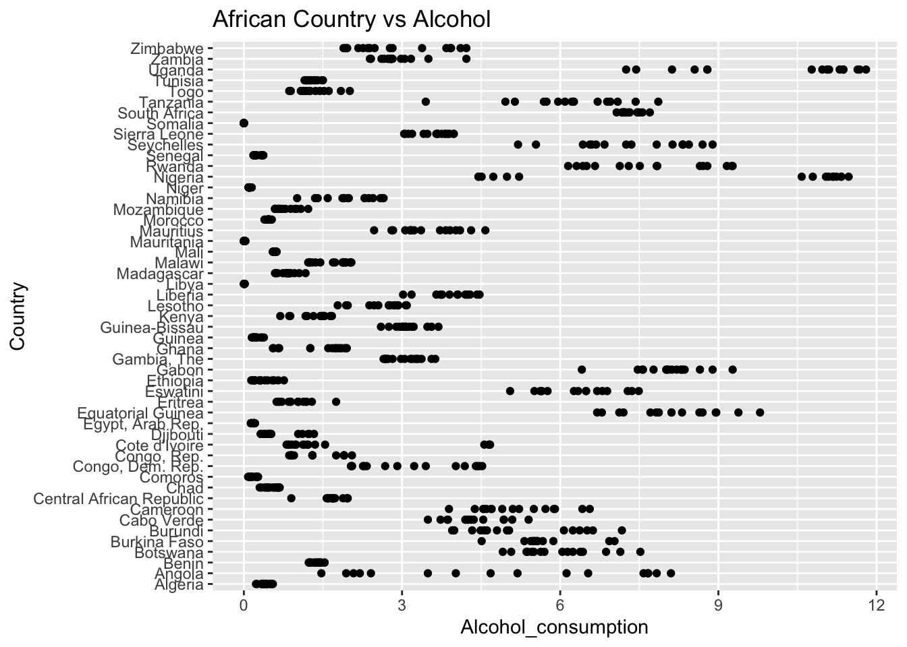
ggplot(filtered_df, aes(x = Hepatitis_B, y = Country)) +
geom_point() +
labs(title = "African Country vs Hepatitis")
ggplot(filtered_df, aes(x = Measles, y = Country)) +
geom_point() +
labs(title = "African Country vs Measles")ggplot(filtered_df, aes(x = Polio, y = Country)) +
geom_point() +
labs(title = "African Country vs Polio")ggplot(filtered_df, aes(x = Diphtheria, y = Country)) +
geom_point() +
labs(title = "African Country vs Diphtheria")ggplot(filtered_df, aes(x = Incidents_HIV, y = Country)) +
geom_point() +
labs(title = "African Country vs HIV")ggplot(filtered_df, aes(x = GDP_per_capita, y = Country)) +
geom_point() +
labs(title = "African Country vs GDP")ggplot(filtered_df, aes(x = Population_mln, y = Country)) +
geom_point() +
labs(title = "African Country vs Population")ggplot(filtered_df, aes(x = Thinness_ten_nineteen_years, y = Country)) +
geom_point() +
labs(title = "African Country vs Thinness")ggplot(filtered_df, aes(x = Schooling, y = Country)) +
geom_point() +
labs(title = "African Country vs Schooling")Not every African nation is low in life expectancy, Why is that? We will take out the two highest, and two lowest countries in Africa and examine them fully, taking the average of the variables within our data over the 15 years present within the data set.
| Country | Mortality | BMI | Alcohol | Hepatitis B | Measles | Polio | Diphtheria | HIV |
|---|---|---|---|---|---|---|---|---|
| Tunisia | 120 | 25.69 | 1.29 | 96.75% | 97.81% | 97.69% | 97.69% | 0.03 |
| Algeria | 150 | 24.87 | 0.40 | 88.31% | 93.25% | 91.75% | 91.88% | 0.02 |
| Zimbabwe | 600 | 23.54 | 2.90 | 79.56% | 64.00% | 79.60% | 79.10% | 8.0 |
| Lesotho | 690 | 24.49 | 2.62 | 86.63% | 70.44% | 87.75% | 89.56% | 14.35 |
| United States | 116 | 28.27 | 8.60 | 91.5% | 86.00% | 92.25% | 95.13% | 0.13 |
| Country | GDP | Population |
|---|---|---|
| Tunisia | 3585.63 | 10.39 |
| Algeria | 3745.13 | 34.82 |
| Zimbabwe | 1290.6 | 12.5 |
| Lesotho | 926.69 | 2.01 |
| United States | 52662.94 | 302.10 |
filtered_us <- df %>%
filter(Country == "United States")
ggplot(filtered_us, aes(x = Mortality, y = Country)) +
geom_point() +
labs(title = "United States vs Mortality")ggplot(filtered_us, aes(x = BMI, y = Country)) +
geom_point() +
labs(title = "United States vs BMI")ggplot(filtered_us, aes(x = Alcohol_consumption, y = Country)) +
geom_point() +
labs(title = "United States vs Alcohol")ggplot(filtered_us, aes(x = Hepatitis_B, y = Country)) +
geom_point() +
labs(title = "United States vs Hepatitis")ggplot(filtered_us, aes(x = Measles, y = Country)) +
geom_point() +
labs(title = "United States vs Measles")ggplot(filtered_us, aes(x = Polio, y = Country)) +
geom_point() +
labs(title = "United States vs Polio")ggplot(filtered_us, aes(x = Diphtheria, y = Country)) +
geom_point() +
labs(title = "United States vs Diphtheria")ggplot(filtered_us, aes(x = Incidents_HIV, y = Country)) +
geom_point() +
labs(title = "United States vs HIV")ggplot(filtered_us, aes(x = GDP_per_capita, y = Country)) +
geom_point() +
labs(title = "United States vs GDP")ggplot(filtered_us, aes(x = Population_mln, y = Country)) +
geom_point() +
labs(title = "United States vs Population")ggplot(filtered_us, aes(x = Thinness_ten_nineteen_years, y = Country)) +
geom_point() +
labs(title = "United States vs Thinness")ggplot(filtered_us, aes(x = Schooling, y = Country)) +
geom_point() +
labs(title = "United States vs Schooling")5.8.1 Deep Analysis Conclusion
Tunisia and Algeria have lower mortality rates compared to Zimbabwe and Lesotho due to higher vaccination rates, higher GDP, and lower incidents of HIV.